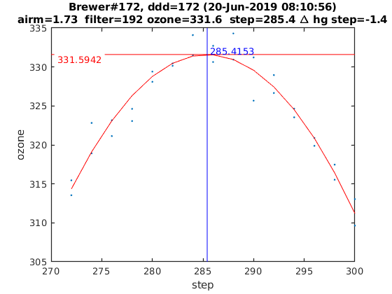

Contents
Brewer Evaluation
clear all;
file_setup='arenos2019_setup';
eval(file_setup);
Cal.n_inst=find(Cal.brw==172);
Cal.file_latex=fullfile('.','latex',Cal.brw_str{Cal.n_inst});
Cal.dir_figs=fullfile('latex',filesep(),Cal.brw_str{Cal.n_inst},...
filesep(),[Cal.brw_str{Cal.n_inst},'_figures'],filesep());
mkdir(Cal.dir_figs);
try
save(Cal.file_save,'-Append','Cal');
catch exception
fprintf('Error: %s\n Initializing data for Brewer %s\n',exception.message,Cal.brw_name{Cal.n_inst});
save(Cal.file_save);
end
ans =
logical
1
ans =
1×1 cell array
{'IZO#185'}
ans =
20×9 cell array
Columns 1 through 5
{'TSK#005'} {[ 5]} {[2]} {[0]} {'005'}
{'IOS#017'} {[ 17]} {[2]} {[0]} {'017'}
{'SCO#033'} {[ 33]} {[2]} {[0]} {'033'}
{'MAD#070'} {[ 70]} {[4]} {[0]} {'070'}
{'UK_#075'} {[ 75]} {[4]} {[0]} {'075'}
{'MUR#117'} {[117]} {[4]} {[0]} {'117'}
{'UK_#126'} {[126]} {[4]} {[0]} {'126'}
{'ARE#150'} {[150]} {[3]} {[0]} {'150'}
{'COR#151'} {[151]} {[4]} {[0]} {'151'}
{'K&Z#158'} {[158]} {[3]} {[0]} {'158'}
{'WRC#163'} {[163]} {[3]} {[0]} {'163'}
{'ZAR#166'} {[166]} {[4]} {[0]} {'166'}
{'UK_#172'} {[172]} {[3]} {[0]} {'172'}
{'JAP#174'} {[174]} {[3]} {[0]} {'174'}
{'IZO#185'} {[185]} {[3]} {[0]} {'185'}
{'MAD#186'} {[186]} {[3]} {[0]} {'186'}
{'CAN#190'} {[190]} {[3]} {[0]} {'190'}
{'TAM#201'} {[201]} {[3]} {[0]} {'201'}
{'DNK#202'} {[202]} {[3]} {[0]} {'202'}
{'DNK#228'} {[228]} {[3]} {[0]} {'228'}
Columns 6 through 9
{'..\005\ICF15117…'} {'..\005\ICF17219…'} {'1838'} {'1838'}
{'..\017\ICF14919…'} {'..\017\ICF14919…'} {'1680'} {'1680'}
{'..\033\ICF15617…'} {'..\033\IOS15617…'} {'2325'} {'2325'}
{'..\070\ICF15617…'} {'..\070\IOS15617…'} {'1685'} {'1685'}
{'..\075\ICF15017…'} {'..\075\ICF15017…'} {'1714'} {'1714'}
{'..\117\ICF15517…'} {'..\117\IOS15517…'} {'1620'} {'1620'}
{'..\126\icf15517…'} {'..\126\ICF17419…'} {'1710'} {'1710'}
{'..\150\ICF15617…'} {'..\150\ICF15617…'} {'0322'} {'0322'}
{'..\151\ICF15317…'} {'..\151\IOS15317…'} {'1880'} {'1880'}
{'..\158\ICF21218…'} {'..\158\ICF21218…'} {'0558'} {'0558'}
{'..\163\ICF21018…'} {'..\163\ICF17519…'} {'0274'} {'0274'}
{'..\166\ICF15217…'} {'..\166\ICF17419…'} {'1955'} {'1955'}
{'..\172\ICF15117…'} {'..\172\ICF15117…'} {'0444'} {'0444'}
{'..\174\ICF20718…'} {'..\174\ICF20718…'} {'0605'} {'0605'}
{'..\185\config18…'} {'..\185\config18…'} {'0365'} {'0367'}
{'..\186\ICF15317…'} {'..\186\IOS15317…'} {'0315'} {'0315'}
{'..\190\ICF11419…'} {'..\190\ICF11419…'} {'0410'} {'0410'}
{'..\201\ICF14315…'} {'..\201\ICF14315…'} {'0320'} {'0320'}
{'..\202\ICF15017…'} {'..\202\ICF15017…'} {'0270'} {'0270'}
{'..\228\ICF15017…'} {'..\228\ICF17419…'} {'0242'} {'0242'}
configuration files
close all
[config_def,TCdef,DTdef,ETCdef,A1def,ATdef]=read_icf(Cal.brw_config_files{Cal.n_inst,2});
[config_orig,TCorig,DTorig,ETCorig,A1orig,ATorig]=read_icf(Cal.brw_config_files{Cal.n_inst,1});
Station.OSC=680;
Station.name='';
Station.lat=67;
Station.long=50;
Station.meanozo=350;
cal_step={}; sc_avg={}; sc_raw={}; Args={};
Sun_scan: Before Campaign
close all
[cal_step{1},sc_avg{1},sc_raw{1},Args{1}]=sc_report(Cal.brw_str{Cal.n_inst},Cal.brw_config_files{Cal.n_inst,1},...
'date_range',datenum(Cal.Date.cal_year,1,[1 159]),...
'CSN_orig',config_orig(14),'OSC',Station.OSC,...
'control_flag',0,'residual_limit',45,...
'hg_time',45,'one_flag',0);
172
OK->B11619.172
OK->B11819.172
OK->B11919.172
OK->B12019.172
OK->B12219.172
OK->B12419.172
OK->B12519.172
OK->B12719.172
OK->B12819.172
OK->B13019.172
OK->B13119.172
OK->B13219.172
OK->B13319.172
OK->B13419.172
OK->B13519.172
OK->B13619.172
OK->B13719.172
Unable to perform assignment with 0 elements on the right-hand side. (Bfile B13819.172) File/Line: readb_config/33
Unable to perform assignment with 0 elements on the right-hand side. (Bfile B13919.172) File/Line: readb_config/33
OK->B14019.172
Unable to perform assignment with 0 elements on the right-hand side. (Bfile B14119.172) File/Line: readb_config/33
Unable to perform assignment with 0 elements on the right-hand side. (Bfile B14219.172) File/Line: readb_config/33
Unable to perform assignment with 0 elements on the right-hand side. (Bfile B14519.172) File/Line: readb_config/33
Warning no depuerd SC
Sun_scan: Campaign
[cal_step{2},sc_avg{2},sc_raw{2},Args{2}]=sc_report(Cal.brw_str{Cal.n_inst},Cal.brw_config_files{Cal.n_inst,2},...
'date_range',datenum(Cal.Date.cal_year,1,Cal.calibration_days{Cal.n_inst,1}([1 end])),...
'CSN_orig',config_def(14),'OSC',Station.OSC,...
'control_flag',1,'residual_limit',35,...
'hg_time',15,'one_flag',1);
172
OK->B17119.172
OK->B17219.172
OK->B17319.172

ix=sort(findobj('tag','SC_INDIVIDUAL')); figure(ix); set(get(gca,'title'),'FontSize',8);
printfiles_report(ix',Cal.dir_figs,'aux_pattern',ix,'FontSize',.9,'Width',8.5,'Height',7);
ix=sort(findobj('tag','Final_SC_Calculation'));
if length(ix)>1
Width=8; Height=6;
for i=1:length(ix), figure(ix(i)); set(get(gca,'title'),'FontSize',8); end
else
Width=13; Height=8;
end
printfiles_report(ix',Cal.dir_figs,'aux_pattern',ix,'Width',Width,'Height',Height);
close all
naux =
1
naux =
1
figura =
'172_figures_Final_SC_Calculation_1'
naux =
2
Definicion de variables: SC
if length(cal_step)>1
d_p=[length(cal_step)-1 length(cal_step)]; tags={'','new'};
else
d_p=1; tags={'new'};
end
idx=1; cal_step_error={};
for t=d_p
cal_step_error{t}=round(mean([abs(cal_step{t}(2)-cal_step{t}(3)),abs(cal_step{t}(2)-cal_step{t}(4))]));
latexcmd(fullfile(Cal.file_latex,['cal_wavelengthSC',tags{idx},'_',Cal.brw_str{Cal.n_inst}]),...
['\numSC',tags{idx}],size(sc_avg{t},1),...
['\CALCSTEP',tags{idx}],round(cal_step{t}(1)),...
['\calsteperror',tags{idx}],cal_step_error{t});
idx=idx+1;
end
load(Cal.file_save,'sunscan');sunscan{Cal.n_inst}.cal_step=cal_step;
sunscan{Cal.n_inst}.cal_step_error=cal_step_error;
sunscan{Cal.n_inst}.sc_avg=sc_avg; sunscan{Cal.n_inst}.sc_raw=sc_raw;
sunscan{Cal.n_inst}.info=Args;
save(Cal.file_save,'-APPEND','sunscan');
dsp calibration
res={}; detail={}; DSP_QUAD={}; QUAD_SUM={}; QUAD_DETAIL={};
CUBIC_SUM={}; CUBIC_DETAIL={}; salida={}; CSN_icf={};
l=dir(fullfile('DSP',[Cal.brw_str{Cal.n_inst},'*']));
ldsp=cellstr(cat(1,l.name));
ldsp=ldsp(end-3:end)
for jj=1:length(ldsp)
if jj==length(ldsp),confign=2; else confign=1; end
try
[res{jj},detail{jj},DSP_QUAD{jj},QUAD_SUM{jj},QUAD_DETAIL{jj},...
CUBIC_SUM{jj},CUBIC_DETAIL{jj},salida{jj},CSN_icf{jj},...
]=dspreport(Cal,'dsp_dir',fullfile('DSP',ldsp{jj}),'config_n',1);
catch
warning(sprintf('Error en %s. DSP: %s',Cal.brw_name{Cal.n_inst},ldsp{jj}));
res{jj}=NaN*ones(15,9,2); detail{jj}=NaN*ones(7,6,15,2); QUAD_DETAIL{jj}=NaN;
end
datefile =
735401
now:W1016613.172
now:W3016613.172
now:W7016613.172
now:W8016613.172
now:W9016613.172
now:W11016613.172
now:W12016613.172
now:W1116613.172
now:W3116613.172
now:W7116613.172
now:W8116613.172
now:W9116613.172
now:W11116613.172
now:W12116613.172
now:W13116613.172
now:W3216613.172
now:W7216613.172
now:W8216613.172
now:W9216613.172
now:W11216613.172
now:W12216613.172
now:W13216613.172
now:W3316613.172
now:W7316613.172
now:W8316613.172
now:W9316613.172
now:W11316613.172
now:W12316613.172
now:W13316613.172
now:W7416613.172
now:W8416613.172
now:W9416613.172
now:W11416613.172
now:W12416613.172
now:W13416613.172
now:W7516613.172
now:W8516613.172
now:W9516613.172
now:W11516613.172
now:W12516613.172
now:W13516613.172
now:W14516613.172
lines_dsp_16613__172
saving alldsp to DSP/172_13_167/alldsp_16613_172.172
eliminamos la linea slit 3 3133.167000 -0.284689
eliminamos la linea slit 2 3499.952000 -0.346904
eliminamos la linea slit 6 3261.055000 -0.125591
eliminamos la linea slit 5 3261.055000 -0.150072
eliminamos la linea slit 4 3499.952000 -0.178934
eliminamos la linea slit 3 3499.952000 -0.144232
eliminamos la linea slit 2 3403.652000 -0.158270
eliminamos la linea slit 1 3403.652000 -0.142813
eliminamos la linea slit 2 3261.055000 0.123391
eliminamos la linea slit 2 2967.280000 -0.130925
saving normaldsp to DSP/172_13_167/dspnorm_16613_172.172 as brewer compatible file
Use polyval(pwl(2,:),wl) for calculating normal wavelengths
Saving ozonecoeffs to DSP/172_13_167/opos16613_172.172
281 WL(A) 3031.41 3062.59 3099.95 3134.52 3167.41 3199.38
Res(A) 11.08 10.98 10.81 11.04 10.93 10.70
O3abs(1/cm) 2.6170 1.7891 1.0071 0.6783 0.3748 0.2977 O3: 0.3493
Daumt O3abs(1/cm) 2.6239 1.7832 0.9991 0.6716 0.3682 0.2974 O3: 0.3588
So2abs(1/cm) 3.5540 5.5132 2.3517 1.9797 1.0444 0.6302
Bremen O3abs(1/cm) 2.6270 1.7866 1.0047 0.6812 0.3733 0.2986 O3: 0.3505
Nicolet 1e4*Rayabs(1/cm) 5054.3 4835.1 4588.2 4374.0 4181.9 4005.4 R: 10.2762
Bates(fix) 1e4*Rayabs(1/cm) 0.0 4870.0 4620.0 4410.0 4220.0 4040.0 R: -1.0000
Bodhaine 1e4*Rayabs(1/cm) 5050.8 4833.1 4587.7 4374.6 4183.4 4007.7 R: 9.9011
I0(mW m^-2nm^-1) 11724.49 9416.17 7388.21 4922.10 4091.09 3255.79 ETC: 1462
Ozone offset due to Rayleigh (RayCOeff/O3Coeff): -2.9 DU
Ozone offset due to Rayleigh (Bodhaine): -3.1 DU
Ratio Ozone for So2(A3)= 1.1673, So2/O3(A2)= 2.6927
O3 factor from Bass & Paur to Daumont = 0.9735
O3 factor from Bass & Paur to Bremen = 0.9966
282 WL(A) 3031.48 3062.66 3100.03 3134.59 3167.48 3199.45
Res(A) 11.08 10.98 10.81 11.04 10.93 10.70
O3abs(1/cm) 2.6142 1.7877 1.0068 0.6781 0.3748 0.2973 O3: 0.3486
Daumt O3abs(1/cm) 2.6211 1.7819 0.9987 0.6715 0.3681 0.2971 O3: 0.3582
So2abs(1/cm) 3.5345 5.5388 2.3583 1.9685 1.0457 0.6283
Bremen O3abs(1/cm) 2.6243 1.7852 1.0043 0.6811 0.3732 0.2984 O3: 0.3499
Nicolet 1e4*Rayabs(1/cm) 5053.8 4834.6 4587.8 4373.6 4181.5 4005.0 R: 10.2727
Bates(fix) 1e4*Rayabs(1/cm) 0.0 4870.0 4620.0 4410.0 4220.0 4040.0 R: -1.0000
Bodhaine 1e4*Rayabs(1/cm) 5050.3 4832.6 4587.3 4374.2 4183.0 4007.3 R: 9.8997
I0(mW m^-2nm^-1) 11718.08 9409.73 7362.83 4918.12 4081.01 3250.98 ETC: 1452
Ozone offset due to Rayleigh (RayCOeff/O3Coeff): -2.9 DU
Ozone offset due to Rayleigh (Bodhaine): -3.1 DU
Ratio Ozone for So2(A3)= 1.1648, So2/O3(A2)= 2.7107
O3 factor from Bass & Paur to Daumont = 0.9732
O3 factor from Bass & Paur to Bremen = 0.9964
283 WL(A) 3031.55 3062.73 3100.10 3134.66 3167.55 3199.52
Res(A) 11.08 10.98 10.81 11.04 10.93 10.70
O3abs(1/cm) 2.6113 1.7862 1.0066 0.6779 0.3748 0.2970 O3: 0.3479
Daumt O3abs(1/cm) 2.6184 1.7806 0.9984 0.6715 0.3681 0.2969 O3: 0.3576
So2abs(1/cm) 3.5150 5.5643 2.3651 1.9570 1.0470 0.6264
Bremen O3abs(1/cm) 2.6217 1.7838 1.0040 0.6810 0.3732 0.2981 O3: 0.3492
Nicolet 1e4*Rayabs(1/cm) 5053.2 4834.1 4587.3 4373.1 4181.1 4004.6 R: 10.2692
Bates(fix) 1e4*Rayabs(1/cm) 0.0 4870.0 4620.0 4410.0 4220.0 4040.0 R: -1.0000
Bodhaine 1e4*Rayabs(1/cm) 5049.7 4832.1 4586.8 4373.8 4182.6 4006.9 R: 9.8960
I0(mW m^-2nm^-1) 11711.68 9403.30 7337.59 4914.13 4070.96 3246.04 ETC: 1443
Ozone offset due to Rayleigh (RayCOeff/O3Coeff): -3.0 DU
Ozone offset due to Rayleigh (Bodhaine): -3.1 DU
Ratio Ozone for So2(A3)= 1.1622, So2/O3(A2)= 2.7286
O3 factor from Bass & Paur to Daumont = 0.9728
O3 factor from Bass & Paur to Bremen = 0.9962
284 WL(A) 3031.63 3062.80 3100.17 3134.73 3167.62 3199.58
Res(A) 11.08 10.98 10.81 11.04 10.93 10.70
O3abs(1/cm) 2.6087 1.7847 1.0063 0.6777 0.3748 0.2966 O3: 0.3470
Daumt O3abs(1/cm) 2.6157 1.7792 0.9980 0.6714 0.3680 0.2966 O3: 0.3569
So2abs(1/cm) 3.4955 5.5893 2.3718 1.9454 1.0482 0.6244
Bremen O3abs(1/cm) 2.6190 1.7823 1.0036 0.6809 0.3732 0.2978 O3: 0.3484
Nicolet 1e4*Rayabs(1/cm) 5052.7 4833.6 4586.9 4372.7 4180.7 4004.3 R: 10.2657
Bates(fix) 1e4*Rayabs(1/cm) 0.0 4870.0 4620.0 4410.0 4220.0 4040.0 R: -1.0000
Bodhaine 1e4*Rayabs(1/cm) 5049.2 4831.7 4586.4 4373.4 4182.2 4006.6 R: 9.8904
I0(mW m^-2nm^-1) 11705.29 9396.89 7312.50 4910.16 4060.93 3240.99 ETC: 1433
Ozone offset due to Rayleigh (RayCOeff/O3Coeff): -3.0 DU
Ozone offset due to Rayleigh (Bodhaine): -3.1 DU
Ratio Ozone for So2(A3)= 1.1596, So2/O3(A2)= 2.7464
O3 factor from Bass & Paur to Daumont = 0.9724
O3 factor from Bass & Paur to Bremen = 0.9960
285 WL(A) 3031.70 3062.88 3100.24 3134.80 3167.69 3199.65
Res(A) 11.08 10.98 10.81 11.04 10.93 10.70
O3abs(1/cm) 2.6061 1.7832 1.0060 0.6775 0.3748 0.2963 O3: 0.3463
Daumt O3abs(1/cm) 2.6130 1.7778 0.9977 0.6713 0.3680 0.2963 O3: 0.3562
So2abs(1/cm) 3.4778 5.6126 2.3790 1.9338 1.0495 0.6223
Bremen O3abs(1/cm) 2.6165 1.7808 1.0033 0.6808 0.3732 0.2975 O3: 0.3477
Nicolet 1e4*Rayabs(1/cm) 5052.2 4833.1 4586.4 4372.3 4180.3 4003.9 R: 10.2622
Bates(fix) 1e4*Rayabs(1/cm) 0.0 4870.0 4620.0 4410.0 4220.0 4040.0 R: -1.0000
Bodhaine 1e4*Rayabs(1/cm) 5048.7 4831.2 4585.9 4372.9 4181.8 4006.2 R: 9.8887
I0(mW m^-2nm^-1) 11698.91 9390.48 7287.55 4906.18 4050.92 3235.42 ETC: 1423
Ozone offset due to Rayleigh (RayCOeff/O3Coeff): -3.0 DU
Ozone offset due to Rayleigh (Bodhaine): -3.1 DU
Ratio Ozone for So2(A3)= 1.1569, So2/O3(A2)= 2.7627
O3 factor from Bass & Paur to Daumont = 0.9722
O3 factor from Bass & Paur to Bremen = 0.9959
286 WL(A) 3031.77 3062.95 3100.31 3134.88 3167.76 3199.72
Res(A) 11.08 10.98 10.81 11.04 10.93 10.70
O3abs(1/cm) 2.6035 1.7817 1.0057 0.6772 0.3748 0.2958 O3: 0.3453
Daumt O3abs(1/cm) 2.6104 1.7764 0.9973 0.6712 0.3680 0.2960 O3: 0.3554
So2abs(1/cm) 3.4608 5.6351 2.3864 1.9224 1.0508 0.6202
Bremen O3abs(1/cm) 2.6139 1.7794 1.0029 0.6806 0.3732 0.2972 O3: 0.3469
Nicolet 1e4*Rayabs(1/cm) 5051.6 4832.7 4585.9 4371.9 4179.9 4003.5 R: 10.2588
Bates(fix) 1e4*Rayabs(1/cm) 0.0 4870.0 4620.0 4410.0 4220.0 4040.0 R: -1.0000
Bodhaine 1e4*Rayabs(1/cm) 5048.2 4830.7 4585.4 4372.5 4181.4 4005.8 R: 9.8865
I0(mW m^-2nm^-1) 11692.54 9384.07 7262.74 4902.21 4040.93 3225.48 ETC: 1405
Ozone offset due to Rayleigh (RayCOeff/O3Coeff): -3.0 DU
Ozone offset due to Rayleigh (Bodhaine): -3.2 DU
Ratio Ozone for So2(A3)= 1.1539, So2/O3(A2)= 2.7790
O3 factor from Bass & Paur to Daumont = 0.9715
O3 factor from Bass & Paur to Bremen = 0.9954
287 WL(A) 3031.85 3063.02 3100.38 3134.95 3167.83 3199.79
Res(A) 11.08 10.98 10.81 11.04 10.93 10.70
O3abs(1/cm) 2.6009 1.7801 1.0053 0.6769 0.3749 0.2953 O3: 0.3442
Daumt O3abs(1/cm) 2.6077 1.7750 0.9970 0.6710 0.3680 0.2957 O3: 0.3546
So2abs(1/cm) 3.4438 5.6573 2.3940 1.9107 1.0520 0.6181
Bremen O3abs(1/cm) 2.6114 1.7778 1.0026 0.6804 0.3732 0.2969 O3: 0.3460
Nicolet 1e4*Rayabs(1/cm) 5051.1 4832.2 4585.5 4371.4 4179.5 4003.2 R: 10.2553
Bates(fix) 1e4*Rayabs(1/cm) 0.0 4870.0 4620.0 4410.0 4220.0 4040.0 R: -1.0000
Bodhaine 1e4*Rayabs(1/cm) 5047.6 4830.2 4585.0 4372.1 4181.1 4005.4 R: 9.8798
I0(mW m^-2nm^-1) 11686.17 9377.68 7238.07 4898.24 4030.96 3215.57 ETC: 1387
Ozone offset due to Rayleigh (RayCOeff/O3Coeff): -3.0 DU
Ozone offset due to Rayleigh (Bodhaine): -3.2 DU
Ratio Ozone for So2(A3)= 1.1508, So2/O3(A2)= 2.7954
O3 factor from Bass & Paur to Daumont = 0.9709
O3 factor from Bass & Paur to Bremen = 0.9949
288 WL(A) 3031.92 3063.09 3100.46 3135.02 3167.90 3199.86
Res(A) 11.08 10.98 10.81 11.04 10.93 10.70
O3abs(1/cm) 2.5983 1.7785 1.0051 0.6766 0.3749 0.2948 O3: 0.3432
Daumt O3abs(1/cm) 2.6052 1.7736 0.9967 0.6708 0.3680 0.2954 O3: 0.3537
So2abs(1/cm) 3.4268 5.6793 2.4015 1.8989 1.0532 0.6160
Bremen O3abs(1/cm) 2.6089 1.7763 1.0023 0.6802 0.3732 0.2965 O3: 0.3451
Nicolet 1e4*Rayabs(1/cm) 5050.6 4831.7 4585.0 4371.0 4179.1 4002.8 R: 10.2518
Bates(fix) 1e4*Rayabs(1/cm) 0.0 4870.0 4620.0 4410.0 4220.0 4040.0 R: -1.0000
Bodhaine 1e4*Rayabs(1/cm) 5047.1 4829.7 4584.5 4371.7 4180.7 4005.1 R: 9.8783
I0(mW m^-2nm^-1) 11679.82 9371.30 7219.96 4894.28 4021.02 3205.68 ETC: 1376
Ozone offset due to Rayleigh (RayCOeff/O3Coeff): -3.0 DU
Ozone offset due to Rayleigh (Bodhaine): -3.2 DU
Ratio Ozone for So2(A3)= 1.1475, So2/O3(A2)= 2.8122
O3 factor from Bass & Paur to Daumont = 0.9705
O3 factor from Bass & Paur to Bremen = 0.9946
289 WL(A) 3031.99 3063.17 3100.53 3135.09 3167.97 3199.93
Res(A) 11.08 10.98 10.81 11.04 10.93 10.70
O3abs(1/cm) 2.5957 1.7769 1.0048 0.6762 0.3749 0.2944 O3: 0.3423
Daumt O3abs(1/cm) 2.6026 1.7721 0.9963 0.6707 0.3681 0.2950 O3: 0.3528
So2abs(1/cm) 3.4114 5.6993 2.4094 1.8872 1.0545 0.6138
Bremen O3abs(1/cm) 2.6064 1.7747 1.0019 0.6799 0.3733 0.2961 O3: 0.3442
Nicolet 1e4*Rayabs(1/cm) 5050.1 4831.2 4584.6 4370.6 4178.7 4002.4 R: 10.2484
Bates(fix) 1e4*Rayabs(1/cm) 0.0 4870.0 4620.0 4410.0 4220.0 4040.0 R: -1.0000
Bodhaine 1e4*Rayabs(1/cm) 5046.6 4829.2 4584.1 4371.3 4180.3 4004.7 R: 9.8764
I0(mW m^-2nm^-1) 11673.47 9364.93 7205.11 4890.32 4011.10 3195.82 ETC: 1368
Ozone offset due to Rayleigh (RayCOeff/O3Coeff): -3.0 DU
Ozone offset due to Rayleigh (Bodhaine): -3.2 DU
Ratio Ozone for So2(A3)= 1.1442, So2/O3(A2)= 2.8271
O3 factor from Bass & Paur to Daumont = 0.9703
O3 factor from Bass & Paur to Bremen = 0.9946
290 WL(A) 3032.07 3063.24 3100.60 3135.16 3168.04 3200.00
Res(A) 11.08 10.98 10.81 11.04 10.93 10.70
O3abs(1/cm) 2.5930 1.7753 1.0046 0.6758 0.3750 0.2939 O3: 0.3413
Daumt O3abs(1/cm) 2.6001 1.7706 0.9960 0.6704 0.3681 0.2946 O3: 0.3518
So2abs(1/cm) 3.3969 5.7185 2.4176 1.8756 1.0557 0.6115
Bremen O3abs(1/cm) 2.6040 1.7732 1.0016 0.6797 0.3733 0.2957 O3: 0.3432
Nicolet 1e4*Rayabs(1/cm) 5049.5 4830.7 4584.1 4370.2 4178.3 4002.0 R: 10.2449
Bates(fix) 1e4*Rayabs(1/cm) 0.0 4870.0 4620.0 4410.0 4220.0 4040.0 R: -1.0000
Bodhaine 1e4*Rayabs(1/cm) 5046.1 4828.7 4583.6 4370.8 4179.9 4004.3 R: 9.8704
I0(mW m^-2nm^-1) 11667.13 9358.56 7190.69 4886.36 4001.20 3185.97 ETC: 1361
Ozone offset due to Rayleigh (RayCOeff/O3Coeff): -3.0 DU
Ozone offset due to Rayleigh (Bodhaine): -3.2 DU
Ratio Ozone for So2(A3)= 1.1407, So2/O3(A2)= 2.8417
O3 factor from Bass & Paur to Daumont = 0.9701
O3 factor from Bass & Paur to Bremen = 0.9945
291 WL(A) 3032.14 3063.31 3100.67 3135.23 3168.11 3200.07
Res(A) 11.08 10.98 10.81 11.04 10.93 10.70
O3abs(1/cm) 2.5906 1.7736 1.0043 0.6754 0.3751 0.2934 O3: 0.3402
Daumt O3abs(1/cm) 2.5976 1.7692 0.9957 0.6702 0.3682 0.2942 O3: 0.3508
So2abs(1/cm) 3.3825 5.7372 2.4260 1.8639 1.0569 0.6093
Bremen O3abs(1/cm) 2.6015 1.7716 1.0013 0.6794 0.3734 0.2953 O3: 0.3422
Nicolet 1e4*Rayabs(1/cm) 5049.0 4830.2 4583.6 4369.7 4177.9 4001.7 R: 10.2414
Bates(fix) 1e4*Rayabs(1/cm) 0.0 4870.0 4620.0 4410.0 4220.0 4040.0 R: -1.0000
Bodhaine 1e4*Rayabs(1/cm) 5045.5 4828.2 4583.2 4370.4 4179.5 4004.0 R: 9.8675
I0(mW m^-2nm^-1) 11660.81 9352.21 7176.67 4882.40 3991.32 3176.15 ETC: 1354
Ozone offset due to Rayleigh (RayCOeff/O3Coeff): -3.0 DU
Ozone offset due to Rayleigh (Bodhaine): -3.2 DU
Ratio Ozone for So2(A3)= 1.1373, So2/O3(A2)= 2.8560
O3 factor from Bass & Paur to Daumont = 0.9698
O3 factor from Bass & Paur to Bremen = 0.9944
saving powfiu7 to DSP/172_13_167/dsp_16613_172.172
freecoef =
4
freecoef =
9
freecoef =
9
freecoef =
9
freecoef =
9
freecoef =
9
freecoef =
9
freecoef =
9
freecoef =
9
freecoef =
9
saving data to file:DSP/172_13_167/dsp_16613_172.172
Use brstps2 to calculate steps and wavelengths
Saving ozonecoeffs to DSP/172_13_167/opos_pow7_16613_172.172
281 WL(A) 3031.56 3062.67 3100.12 3134.62 3167.59 3199.56
Res(A) 11.07 10.96 10.81 11.03 10.94 10.70
O3abs(1/cm) 2.6109 1.7875 1.0065 0.6781 0.3748 0.2968 O3: 0.3473
Daumt O3abs(1/cm) 2.6180 1.7818 0.9982 0.6715 0.3681 0.2967 O3: 0.3571
So2abs(1/cm) 3.5118 5.5432 2.3677 1.9647 1.0476 0.6252
Bremen O3abs(1/cm) 2.6213 1.7851 1.0038 0.6811 0.3732 0.2979 O3: 0.3487
Nicolet 1e4*Rayabs(1/cm) 5053.2 4834.6 4587.1 4373.4 4180.9 4004.4 R: 10.0505
Bates(fix) 1e4*Rayabs(1/cm) 0.0 4870.0 4620.0 4410.0 4220.0 4040.0 R: -1.0000
Bodhaine 1e4*Rayabs(1/cm) 5049.7 4832.6 4586.6 4374.1 4182.4 4006.7 R: 9.6783
I0(mW m^-2nm^-1) 11710.90 9408.92 7327.86 4916.74 4065.58 3243.14 ETC: 1439
Ozone offset due to Rayleigh (RayCOeff/O3Coeff): -2.9 DU
Ozone offset due to Rayleigh (Bodhaine): -3.1 DU
Ratio Ozone for So2(A3)= 1.1628, So2/O3(A2)= 2.7035
O3 factor from Bass & Paur to Daumont = 0.9724
O3 factor from Bass & Paur to Bremen = 0.9959
282 WL(A) 3031.64 3062.74 3100.20 3134.69 3167.66 3199.63
Res(A) 11.07 10.96 10.81 11.03 10.94 10.70
O3abs(1/cm) 2.6083 1.7861 1.0061 0.6779 0.3748 0.2964 O3: 0.3464
Daumt O3abs(1/cm) 2.6153 1.7805 0.9979 0.6715 0.3680 0.2964 O3: 0.3564
So2abs(1/cm) 3.4923 5.5687 2.3744 1.9531 1.0489 0.6232
Bremen O3abs(1/cm) 2.6187 1.7837 1.0035 0.6810 0.3732 0.2976 O3: 0.3479
Nicolet 1e4*Rayabs(1/cm) 5052.6 4834.1 4586.7 4373.0 4180.5 4004.1 R: 10.0481
Bates(fix) 1e4*Rayabs(1/cm) 0.0 4870.0 4620.0 4410.0 4220.0 4040.0 R: -1.0000
Bodhaine 1e4*Rayabs(1/cm) 5049.1 4832.1 4586.2 4373.7 4182.0 4006.3 R: 9.6767
I0(mW m^-2nm^-1) 11704.51 9402.48 7302.81 4912.75 4055.57 3238.01 ETC: 1429
Ozone offset due to Rayleigh (RayCOeff/O3Coeff): -2.9 DU
Ozone offset due to Rayleigh (Bodhaine): -3.1 DU
Ratio Ozone for So2(A3)= 1.1602, So2/O3(A2)= 2.7215
O3 factor from Bass & Paur to Daumont = 0.9721
O3 factor from Bass & Paur to Bremen = 0.9958
283 WL(A) 3031.71 3062.81 3100.27 3134.76 3167.73 3199.69
Res(A) 11.07 10.96 10.81 11.03 10.94 10.70
O3abs(1/cm) 2.6057 1.7845 1.0058 0.6777 0.3748 0.2960 O3: 0.3455
Daumt O3abs(1/cm) 2.6126 1.7791 0.9975 0.6714 0.3680 0.2961 O3: 0.3556
So2abs(1/cm) 3.4750 5.5933 2.3819 1.9415 1.0502 0.6211
Bremen O3abs(1/cm) 2.6161 1.7822 1.0031 0.6809 0.3732 0.2973 O3: 0.3471
Nicolet 1e4*Rayabs(1/cm) 5052.1 4833.6 4586.2 4372.6 4180.1 4003.7 R: 10.0457
Bates(fix) 1e4*Rayabs(1/cm) 0.0 4870.0 4620.0 4410.0 4220.0 4040.0 R: -1.0000
Bodhaine 1e4*Rayabs(1/cm) 5048.6 4831.6 4585.7 4373.2 4181.6 4006.0 R: 9.6704
I0(mW m^-2nm^-1) 11698.12 9396.06 7277.91 4908.77 4045.58 3229.63 ETC: 1414
Ozone offset due to Rayleigh (RayCOeff/O3Coeff): -2.9 DU
Ozone offset due to Rayleigh (Bodhaine): -3.1 DU
Ratio Ozone for So2(A3)= 1.1574, So2/O3(A2)= 2.7390
O3 factor from Bass & Paur to Daumont = 0.9716
O3 factor from Bass & Paur to Bremen = 0.9955
284 WL(A) 3031.78 3062.88 3100.34 3134.83 3167.80 3199.76
Res(A) 11.07 10.96 10.81 11.03 10.94 10.70
O3abs(1/cm) 2.6031 1.7830 1.0055 0.6774 0.3749 0.2955 O3: 0.3445
Daumt O3abs(1/cm) 2.6100 1.7777 0.9972 0.6713 0.3680 0.2958 O3: 0.3548
So2abs(1/cm) 3.4580 5.6166 2.3893 1.9300 1.0514 0.6190
Bremen O3abs(1/cm) 2.6135 1.7807 1.0028 0.6807 0.3732 0.2970 O3: 0.3463
Nicolet 1e4*Rayabs(1/cm) 5051.6 4833.1 4585.8 4372.1 4179.7 4003.3 R: 10.0433
Bates(fix) 1e4*Rayabs(1/cm) 0.0 4870.0 4620.0 4410.0 4220.0 4040.0 R: -1.0000
Bodhaine 1e4*Rayabs(1/cm) 5048.1 4831.1 4585.3 4372.8 4181.2 4005.6 R: 9.6702
I0(mW m^-2nm^-1) 11691.75 9389.64 7253.14 4904.79 4035.62 3219.71 ETC: 1396
Ozone offset due to Rayleigh (RayCOeff/O3Coeff): -2.9 DU
Ozone offset due to Rayleigh (Bodhaine): -3.1 DU
Ratio Ozone for So2(A3)= 1.1543, So2/O3(A2)= 2.7562
O3 factor from Bass & Paur to Daumont = 0.9709
O3 factor from Bass & Paur to Bremen = 0.9949
285 WL(A) 3031.86 3062.96 3100.41 3134.90 3167.87 3199.83
Res(A) 11.07 10.96 10.81 11.03 10.94 10.70
O3abs(1/cm) 2.6005 1.7815 1.0052 0.6771 0.3749 0.2950 O3: 0.3435
Daumt O3abs(1/cm) 2.6074 1.7763 0.9969 0.6712 0.3680 0.2955 O3: 0.3540
So2abs(1/cm) 3.4410 5.6391 2.3969 1.9186 1.0527 0.6169
Bremen O3abs(1/cm) 2.6110 1.7792 1.0025 0.6806 0.3732 0.2966 O3: 0.3454
Nicolet 1e4*Rayabs(1/cm) 5051.0 4832.6 4585.3 4371.7 4179.3 4002.9 R: 10.0408
Bates(fix) 1e4*Rayabs(1/cm) 0.0 4870.0 4620.0 4410.0 4220.0 4040.0 R: -1.0000
Bodhaine 1e4*Rayabs(1/cm) 5047.6 4830.6 4584.8 4372.4 4180.8 4005.2 R: 9.6709
I0(mW m^-2nm^-1) 11685.38 9383.23 7229.46 4900.81 4025.67 3209.81 ETC: 1379
Ozone offset due to Rayleigh (RayCOeff/O3Coeff): -2.9 DU
Ozone offset due to Rayleigh (Bodhaine): -3.1 DU
Ratio Ozone for So2(A3)= 1.1511, So2/O3(A2)= 2.7731
O3 factor from Bass & Paur to Daumont = 0.9703
O3 factor from Bass & Paur to Bremen = 0.9945
286 WL(A) 3031.93 3063.03 3100.48 3134.97 3167.94 3199.90
Res(A) 11.07 10.96 10.81 11.03 10.94 10.70
O3abs(1/cm) 2.5979 1.7800 1.0050 0.6769 0.3749 0.2946 O3: 0.3425
Daumt O3abs(1/cm) 2.6048 1.7749 0.9965 0.6710 0.3681 0.2952 O3: 0.3531
So2abs(1/cm) 3.4240 5.6614 2.4045 1.9068 1.0539 0.6147
Bremen O3abs(1/cm) 2.6085 1.7777 1.0021 0.6804 0.3733 0.2963 O3: 0.3444
Nicolet 1e4*Rayabs(1/cm) 5050.5 4832.1 4584.8 4371.3 4178.9 4002.6 R: 10.0384
Bates(fix) 1e4*Rayabs(1/cm) 0.0 4870.0 4620.0 4410.0 4220.0 4040.0 R: -1.0000
Bodhaine 1e4*Rayabs(1/cm) 5047.0 4830.1 4584.4 4372.0 4180.4 4004.9 R: 9.6647
I0(mW m^-2nm^-1) 11679.02 9376.83 7214.35 4896.84 4015.75 3199.94 ETC: 1371
Ozone offset due to Rayleigh (RayCOeff/O3Coeff): -2.9 DU
Ozone offset due to Rayleigh (Bodhaine): -3.1 DU
Ratio Ozone for So2(A3)= 1.1480, So2/O3(A2)= 2.7894
O3 factor from Bass & Paur to Daumont = 0.9700
O3 factor from Bass & Paur to Bremen = 0.9943
287 WL(A) 3032.00 3063.10 3100.55 3135.04 3168.01 3199.97
Res(A) 11.07 10.96 10.81 11.03 10.94 10.70
O3abs(1/cm) 2.5953 1.7784 1.0047 0.6765 0.3750 0.2941 O3: 0.3415
Daumt O3abs(1/cm) 2.6022 1.7735 0.9962 0.6708 0.3681 0.2948 O3: 0.3521
So2abs(1/cm) 3.4090 5.6829 2.4126 1.8950 1.0551 0.6125
Bremen O3abs(1/cm) 2.6060 1.7762 1.0018 0.6801 0.3733 0.2959 O3: 0.3435
Nicolet 1e4*Rayabs(1/cm) 5050.0 4831.6 4584.4 4370.9 4178.5 4002.2 R: 10.0360
Bates(fix) 1e4*Rayabs(1/cm) 0.0 4870.0 4620.0 4410.0 4220.0 4040.0 R: -1.0000
Bodhaine 1e4*Rayabs(1/cm) 5046.5 4829.6 4583.9 4371.5 4180.1 4004.5 R: 9.6620
I0(mW m^-2nm^-1) 11672.67 9370.44 7199.67 4892.87 4005.86 3190.08 ETC: 1363
Ozone offset due to Rayleigh (RayCOeff/O3Coeff): -2.9 DU
Ozone offset due to Rayleigh (Bodhaine): -3.1 DU
Ratio Ozone for So2(A3)= 1.1446, So2/O3(A2)= 2.8057
O3 factor from Bass & Paur to Daumont = 0.9698
O3 factor from Bass & Paur to Bremen = 0.9943
288 WL(A) 3032.08 3063.17 3100.63 3135.11 3168.08 3200.04
Res(A) 11.07 10.96 10.81 11.03 10.94 10.70
O3abs(1/cm) 2.5927 1.7768 1.0045 0.6761 0.3751 0.2936 O3: 0.3405
Daumt O3abs(1/cm) 2.5997 1.7720 0.9959 0.6706 0.3681 0.2944 O3: 0.3511
So2abs(1/cm) 3.3945 5.7029 2.4208 1.8833 1.0563 0.6103
Bremen O3abs(1/cm) 2.6036 1.7746 1.0015 0.6799 0.3734 0.2955 O3: 0.3424
Nicolet 1e4*Rayabs(1/cm) 5049.4 4831.1 4583.9 4370.4 4178.1 4001.8 R: 10.0336
Bates(fix) 1e4*Rayabs(1/cm) 0.0 4870.0 4620.0 4410.0 4220.0 4040.0 R: -1.0000
Bodhaine 1e4*Rayabs(1/cm) 5046.0 4829.1 4583.5 4371.1 4179.7 4004.1 R: 9.6637
I0(mW m^-2nm^-1) 11666.33 9364.06 7185.40 4888.90 3995.98 3180.25 ETC: 1356
Ozone offset due to Rayleigh (RayCOeff/O3Coeff): -2.9 DU
Ozone offset due to Rayleigh (Bodhaine): -3.1 DU
Ratio Ozone for So2(A3)= 1.1412, So2/O3(A2)= 2.8209
O3 factor from Bass & Paur to Daumont = 0.9696
O3 factor from Bass & Paur to Bremen = 0.9942
289 WL(A) 3032.15 3063.25 3100.70 3135.18 3168.15 3200.11
Res(A) 11.07 10.96 10.81 11.03 10.94 10.70
O3abs(1/cm) 2.5903 1.7751 1.0042 0.6757 0.3751 0.2932 O3: 0.3394
Daumt O3abs(1/cm) 2.5972 1.7705 0.9955 0.6704 0.3682 0.2940 O3: 0.3501
So2abs(1/cm) 3.3801 5.7221 2.4292 1.8718 1.0575 0.6080
Bremen O3abs(1/cm) 2.6012 1.7730 1.0011 0.6796 0.3734 0.2951 O3: 0.3414
Nicolet 1e4*Rayabs(1/cm) 5048.9 4830.6 4583.5 4370.0 4177.7 4001.5 R: 10.0312
Bates(fix) 1e4*Rayabs(1/cm) 0.0 4870.0 4620.0 4410.0 4220.0 4040.0 R: -1.0000
Bodhaine 1e4*Rayabs(1/cm) 5045.5 4828.6 4583.0 4370.7 4179.3 4003.8 R: 9.6588
I0(mW m^-2nm^-1) 11660.00 9357.69 7171.53 4884.94 3986.13 3170.44 ETC: 1349
Ozone offset due to Rayleigh (RayCOeff/O3Coeff): -3.0 DU
Ozone offset due to Rayleigh (Bodhaine): -3.1 DU
Ratio Ozone for So2(A3)= 1.1377, So2/O3(A2)= 2.8356
O3 factor from Bass & Paur to Daumont = 0.9694
O3 factor from Bass & Paur to Bremen = 0.9942
290 WL(A) 3032.22 3063.32 3100.77 3135.25 3168.22 3200.18
Res(A) 11.07 10.96 10.81 11.03 10.94 10.70
O3abs(1/cm) 2.5879 1.7735 1.0038 0.6753 0.3752 0.2927 O3: 0.3383
Daumt O3abs(1/cm) 2.5947 1.7690 0.9952 0.6701 0.3683 0.2936 O3: 0.3490
So2abs(1/cm) 3.3657 5.7408 2.4376 1.8600 1.0587 0.6057
Bremen O3abs(1/cm) 2.5988 1.7714 1.0008 0.6793 0.3735 0.2947 O3: 0.3403
Nicolet 1e4*Rayabs(1/cm) 5048.4 4830.1 4583.0 4369.6 4177.3 4001.1 R: 10.0287
Bates(fix) 1e4*Rayabs(1/cm) 0.0 4870.0 4620.0 4410.0 4220.0 4040.0 R: -1.0000
Bodhaine 1e4*Rayabs(1/cm) 5045.0 4828.2 4582.5 4370.3 4178.9 4003.4 R: 9.6542
I0(mW m^-2nm^-1) 11653.68 9351.32 7154.89 4880.98 3976.29 3160.65 ETC: 1340
Ozone offset due to Rayleigh (RayCOeff/O3Coeff): -3.0 DU
Ozone offset due to Rayleigh (Bodhaine): -3.1 DU
Ratio Ozone for So2(A3)= 1.1341, So2/O3(A2)= 2.8502
O3 factor from Bass & Paur to Daumont = 0.9691
O3 factor from Bass & Paur to Bremen = 0.9940
291 WL(A) 3032.29 3063.39 3100.84 3135.32 3168.29 3200.25
Res(A) 11.07 10.96 10.81 11.02 10.94 10.70
O3abs(1/cm) 2.5855 1.7718 1.0035 0.6748 0.3753 0.2921 O3: 0.3369
Daumt O3abs(1/cm) 2.5923 1.7675 0.9949 0.6699 0.3684 0.2932 O3: 0.3479
So2abs(1/cm) 3.3530 5.7591 2.4463 1.8482 1.0599 0.6033
Bremen O3abs(1/cm) 2.5964 1.7698 1.0005 0.6790 0.3736 0.2942 O3: 0.3392
Nicolet 1e4*Rayabs(1/cm) 5047.9 4829.6 4582.6 4369.2 4176.9 4000.7 R: 10.0263
Bates(fix) 1e4*Rayabs(1/cm) 0.0 4870.0 4620.0 4410.0 4220.0 4040.0 R: -1.0000
Bodhaine 1e4*Rayabs(1/cm) 5044.4 4827.7 4582.1 4369.8 4178.5 4003.0 R: 9.6557
I0(mW m^-2nm^-1) 11647.37 9344.97 7138.11 4877.02 3966.48 3150.88 ETC: 1330
Ozone offset due to Rayleigh (RayCOeff/O3Coeff): -3.0 DU
Ozone offset due to Rayleigh (Bodhaine): -3.2 DU
Ratio Ozone for So2(A3)= 1.1301, So2/O3(A2)= 2.8653
O3 factor from Bass & Paur to Daumont = 0.9684
O3 factor from Bass & Paur to Bremen = 0.9934

datefile =
736117
now:W1015215.172
now:W3015215.172
now:W7015215.172
now:W8015215.172
now:W9015215.172
now:W11015215.172
now:W12015215.172
now:W1115215.172
now:W3115215.172
now:W7115215.172
now:W8115215.172
now:W9115215.172
now:W11115215.172
now:W12115215.172
now:W13115215.172
now:W3215215.172
now:W7215215.172
now:W8215215.172
now:W9215215.172
now:W11215215.172
now:W12215215.172
now:W13215215.172
now:W3315215.172
now:W7315215.172
now:W8315215.172
now:W9315215.172
now:W11315215.172
now:W12315215.172
now:W13315215.172
now:W7415215.172
now:W8415215.172
now:W9415215.172
now:W11415215.172
now:W12415215.172
now:W13415215.172
now:W7515215.172
now:W8515215.172
now:W9515215.172
now:W11515215.172
now:W12515215.172
now:W13515215.172
now:W14515215.172
lines_dsp_15215__172
saving alldsp to DSP/172_15_153/alldsp_15215_172.172
eliminamos la linea slit 4 3341.480000 0.358324
eliminamos la linea slit 3 3341.480000 0.361342
eliminamos la linea slit 2 3499.952000 -0.344420
eliminamos la linea slit 1 3341.480000 0.305030
eliminamos la linea slit 6 3341.480000 0.151265
eliminamos la linea slit 5 3261.055000 -0.139108
eliminamos la linea slit 4 3499.952000 -0.170455
eliminamos la linea slit 3 3499.952000 -0.185226
eliminamos la linea slit 2 3403.652000 -0.233619
eliminamos la linea slit 1 3261.055000 0.190879
eliminamos la linea slit 4 3261.055000 0.169777
eliminamos la linea slit 3 3261.055000 0.175944
saving normaldsp to DSP/172_15_153/dspnorm_15215_172.172 as brewer compatible file
Use polyval(pwl(2,:),wl) for calculating normal wavelengths
Saving ozonecoeffs to DSP/172_15_153/opos15215_172.172
281 WL(A) 3031.44 3062.71 3100.26 3134.84 3167.54 3199.58
Res(A) 11.13 10.94 10.83 11.09 10.94 10.71
O3abs(1/cm) 2.6160 1.7867 1.0059 0.6772 0.3748 0.2966 O3: 0.3469
Daumt O3abs(1/cm) 2.6229 1.7810 0.9976 0.6711 0.3681 0.2966 O3: 0.3565
So2abs(1/cm) 3.5483 5.5604 2.3817 1.9274 1.0466 0.6245
Bremen O3abs(1/cm) 2.6260 1.7842 1.0032 0.6805 0.3732 0.2978 O3: 0.3481
Nicolet 1e4*Rayabs(1/cm) 5054.1 4834.3 4586.3 4372.1 4181.2 4004.3 R: 8.9408
Bates(fix) 1e4*Rayabs(1/cm) 0.0 4870.0 4620.0 4410.0 4220.0 4040.0 R: -1.0000
Bodhaine 1e4*Rayabs(1/cm) 5050.6 4832.3 4585.8 4372.7 4182.7 4006.6 R: 8.5716
I0(mW m^-2nm^-1) 11721.14 9404.89 7278.98 4904.36 4073.52 3241.38 ETC: 1375
Ozone offset due to Rayleigh (RayCOeff/O3Coeff): -2.6 DU
Ozone offset due to Rayleigh (Bodhaine): -2.8 DU
Ratio Ozone for So2(A3)= 1.1616, So2/O3(A2)= 2.7228
O3 factor from Bass & Paur to Daumont = 0.9732
O3 factor from Bass & Paur to Bremen = 0.9966
282 WL(A) 3031.51 3062.78 3100.33 3134.91 3167.61 3199.65
Res(A) 11.13 10.94 10.83 11.09 10.94 10.71
O3abs(1/cm) 2.6131 1.7852 1.0055 0.6769 0.3748 0.2963 O3: 0.3461
Daumt O3abs(1/cm) 2.6201 1.7797 0.9972 0.6709 0.3681 0.2963 O3: 0.3558
So2abs(1/cm) 3.5289 5.5856 2.3892 1.9158 1.0479 0.6225
Bremen O3abs(1/cm) 2.6233 1.7828 1.0028 0.6803 0.3732 0.2975 O3: 0.3474
Nicolet 1e4*Rayabs(1/cm) 5053.5 4833.8 4585.8 4371.6 4180.8 4003.9 R: 8.9364
Bates(fix) 1e4*Rayabs(1/cm) 0.0 4870.0 4620.0 4410.0 4220.0 4040.0 R: -1.0000
Bodhaine 1e4*Rayabs(1/cm) 5050.1 4831.8 4585.3 4372.3 4182.3 4006.2 R: 8.5675
I0(mW m^-2nm^-1) 11714.78 9398.43 7254.31 4900.43 4063.51 3236.01 ETC: 1366
Ozone offset due to Rayleigh (RayCOeff/O3Coeff): -2.6 DU
Ozone offset due to Rayleigh (Bodhaine): -2.8 DU
Ratio Ozone for So2(A3)= 1.1590, So2/O3(A2)= 2.7407
O3 factor from Bass & Paur to Daumont = 0.9728
O3 factor from Bass & Paur to Bremen = 0.9964
283 WL(A) 3031.58 3062.86 3100.41 3134.99 3167.68 3199.72
Res(A) 11.13 10.94 10.83 11.09 10.94 10.71
O3abs(1/cm) 2.6103 1.7836 1.0052 0.6766 0.3748 0.2958 O3: 0.3452
Daumt O3abs(1/cm) 2.6174 1.7783 0.9969 0.6708 0.3680 0.2960 O3: 0.3551
So2abs(1/cm) 3.5096 5.6091 2.3967 1.9041 1.0492 0.6203
Bremen O3abs(1/cm) 2.6207 1.7813 1.0025 0.6801 0.3732 0.2972 O3: 0.3466
Nicolet 1e4*Rayabs(1/cm) 5053.0 4833.3 4585.3 4371.2 4180.4 4003.6 R: 8.9320
Bates(fix) 1e4*Rayabs(1/cm) 0.0 4870.0 4620.0 4410.0 4220.0 4040.0 R: -1.0000
Bodhaine 1e4*Rayabs(1/cm) 5049.5 4831.3 4584.8 4371.9 4181.9 4005.8 R: 8.5668
I0(mW m^-2nm^-1) 11708.42 9391.98 7229.78 4896.51 4053.51 3226.08 ETC: 1348
Ozone offset due to Rayleigh (RayCOeff/O3Coeff): -2.6 DU
Ozone offset due to Rayleigh (Bodhaine): -2.8 DU
Ratio Ozone for So2(A3)= 1.1560, So2/O3(A2)= 2.7575
O3 factor from Bass & Paur to Daumont = 0.9722
O3 factor from Bass & Paur to Bremen = 0.9959
284 WL(A) 3031.66 3062.93 3100.48 3135.06 3167.75 3199.79
Res(A) 11.13 10.94 10.83 11.09 10.94 10.71
O3abs(1/cm) 2.6077 1.7821 1.0050 0.6762 0.3748 0.2954 O3: 0.3443
Daumt O3abs(1/cm) 2.6147 1.7769 0.9966 0.6706 0.3680 0.2957 O3: 0.3543
So2abs(1/cm) 3.4903 5.6322 2.4043 1.8925 1.0504 0.6182
Bremen O3abs(1/cm) 2.6181 1.7798 1.0021 0.6799 0.3732 0.2969 O3: 0.3458
Nicolet 1e4*Rayabs(1/cm) 5052.5 4832.8 4584.9 4370.8 4180.0 4003.2 R: 8.9276
Bates(fix) 1e4*Rayabs(1/cm) 0.0 4870.0 4620.0 4410.0 4220.0 4040.0 R: -1.0000
Bodhaine 1e4*Rayabs(1/cm) 5049.0 4830.8 4584.4 4371.4 4181.6 4005.5 R: 8.5605
I0(mW m^-2nm^-1) 11702.08 9385.54 7213.32 4892.60 4043.54 3216.16 ETC: 1339
Ozone offset due to Rayleigh (RayCOeff/O3Coeff): -2.6 DU
Ozone offset due to Rayleigh (Bodhaine): -2.8 DU
Ratio Ozone for So2(A3)= 1.1529, So2/O3(A2)= 2.7745
O3 factor from Bass & Paur to Daumont = 0.9718
O3 factor from Bass & Paur to Bremen = 0.9956
285 WL(A) 3031.73 3063.00 3100.55 3135.13 3167.82 3199.86
Res(A) 11.13 10.94 10.83 11.09 10.94 10.71
O3abs(1/cm) 2.6051 1.7806 1.0047 0.6758 0.3749 0.2949 O3: 0.3434
Daumt O3abs(1/cm) 2.6120 1.7755 0.9962 0.6704 0.3680 0.2954 O3: 0.3535
So2abs(1/cm) 3.4731 5.6546 2.4125 1.8808 1.0517 0.6161
Bremen O3abs(1/cm) 2.6155 1.7783 1.0018 0.6796 0.3732 0.2965 O3: 0.3450
Nicolet 1e4*Rayabs(1/cm) 5051.9 4832.3 4584.4 4370.3 4179.6 4002.8 R: 8.9233
Bates(fix) 1e4*Rayabs(1/cm) 0.0 4870.0 4620.0 4410.0 4220.0 4040.0 R: -1.0000
Bodhaine 1e4*Rayabs(1/cm) 5048.5 4830.3 4583.9 4371.0 4181.2 4005.1 R: 8.5539
I0(mW m^-2nm^-1) 11695.74 9379.10 7198.67 4888.69 4033.58 3206.27 ETC: 1331
Ozone offset due to Rayleigh (RayCOeff/O3Coeff): -2.6 DU
Ozone offset due to Rayleigh (Bodhaine): -2.8 DU
Ratio Ozone for So2(A3)= 1.1497, So2/O3(A2)= 2.7912
O3 factor from Bass & Paur to Daumont = 0.9714
O3 factor from Bass & Paur to Bremen = 0.9953
286 WL(A) 3031.80 3063.07 3100.62 3135.20 3167.89 3199.93
Res(A) 11.13 10.94 10.83 11.09 10.94 10.71
O3abs(1/cm) 2.6025 1.7791 1.0045 0.6754 0.3749 0.2944 O3: 0.3425
Daumt O3abs(1/cm) 2.6094 1.7740 0.9959 0.6701 0.3680 0.2950 O3: 0.3527
So2abs(1/cm) 3.4562 5.6768 2.4207 1.8690 1.0529 0.6139
Bremen O3abs(1/cm) 2.6130 1.7768 1.0015 0.6793 0.3732 0.2961 O3: 0.3441
Nicolet 1e4*Rayabs(1/cm) 5051.4 4831.8 4584.0 4369.9 4179.2 4002.4 R: 8.9189
Bates(fix) 1e4*Rayabs(1/cm) 0.0 4870.0 4620.0 4410.0 4220.0 4040.0 R: -1.0000
Bodhaine 1e4*Rayabs(1/cm) 5048.0 4829.8 4583.5 4370.6 4180.8 4004.7 R: 8.5525
I0(mW m^-2nm^-1) 11689.42 9372.68 7184.43 4884.78 4023.66 3196.40 ETC: 1324
Ozone offset due to Rayleigh (RayCOeff/O3Coeff): -2.6 DU
Ozone offset due to Rayleigh (Bodhaine): -2.8 DU
Ratio Ozone for So2(A3)= 1.1466, So2/O3(A2)= 2.8075
O3 factor from Bass & Paur to Daumont = 0.9710
O3 factor from Bass & Paur to Bremen = 0.9951
287 WL(A) 3031.88 3063.15 3100.69 3135.27 3167.96 3200.00
Res(A) 11.13 10.94 10.83 11.09 10.94 10.71
O3abs(1/cm) 2.6000 1.7774 1.0042 0.6750 0.3749 0.2939 O3: 0.3415
Daumt O3abs(1/cm) 2.6068 1.7726 0.9955 0.6699 0.3681 0.2947 O3: 0.3518
So2abs(1/cm) 3.4393 5.6969 2.4290 1.8573 1.0541 0.6117
Bremen O3abs(1/cm) 2.6104 1.7752 1.0011 0.6790 0.3733 0.2958 O3: 0.3432
Nicolet 1e4*Rayabs(1/cm) 5050.9 4831.3 4583.5 4369.5 4178.8 4002.1 R: 8.9145
Bates(fix) 1e4*Rayabs(1/cm) 0.0 4870.0 4620.0 4410.0 4220.0 4040.0 R: -1.0000
Bodhaine 1e4*Rayabs(1/cm) 5047.4 4829.3 4583.0 4370.2 4180.4 4004.4 R: 8.5488
I0(mW m^-2nm^-1) 11683.10 9366.27 7170.59 4880.87 4013.75 3186.55 ETC: 1317
Ozone offset due to Rayleigh (RayCOeff/O3Coeff): -2.6 DU
Ozone offset due to Rayleigh (Bodhaine): -2.8 DU
Ratio Ozone for So2(A3)= 1.1433, So2/O3(A2)= 2.8224
O3 factor from Bass & Paur to Daumont = 0.9708
O3 factor from Bass & Paur to Bremen = 0.9950
288 WL(A) 3031.95 3063.22 3100.76 3135.34 3168.03 3200.06
Res(A) 11.13 10.94 10.83 11.09 10.94 10.71
O3abs(1/cm) 2.5974 1.7758 1.0038 0.6745 0.3750 0.2935 O3: 0.3405
Daumt O3abs(1/cm) 2.6042 1.7711 0.9952 0.6696 0.3681 0.2943 O3: 0.3508
So2abs(1/cm) 3.4225 5.7167 2.4374 1.8456 1.0554 0.6094
Bremen O3abs(1/cm) 2.6079 1.7737 1.0008 0.6787 0.3733 0.2954 O3: 0.3422
Nicolet 1e4*Rayabs(1/cm) 5050.4 4830.8 4583.0 4369.1 4178.4 4001.7 R: 8.9102
Bates(fix) 1e4*Rayabs(1/cm) 0.0 4870.0 4620.0 4410.0 4220.0 4040.0 R: -1.0000
Bodhaine 1e4*Rayabs(1/cm) 5046.9 4828.8 4582.6 4369.7 4180.0 4004.0 R: 8.5411
I0(mW m^-2nm^-1) 11676.79 9359.86 7154.28 4876.97 4003.86 3176.73 ETC: 1308
Ozone offset due to Rayleigh (RayCOeff/O3Coeff): -2.6 DU
Ozone offset due to Rayleigh (Bodhaine): -2.8 DU
Ratio Ozone for So2(A3)= 1.1399, So2/O3(A2)= 2.8375
O3 factor from Bass & Paur to Daumont = 0.9705
O3 factor from Bass & Paur to Bremen = 0.9949
289 WL(A) 3032.02 3063.29 3100.84 3135.41 3168.10 3200.13
Res(A) 11.13 10.94 10.83 11.09 10.94 10.71
O3abs(1/cm) 2.5947 1.7741 1.0035 0.6740 0.3751 0.2930 O3: 0.3394
Daumt O3abs(1/cm) 2.6017 1.7696 0.9949 0.6693 0.3682 0.2939 O3: 0.3498
So2abs(1/cm) 3.4078 5.7356 2.4462 1.8339 1.0566 0.6072
Bremen O3abs(1/cm) 2.6055 1.7721 1.0005 0.6783 0.3734 0.2949 O3: 0.3412
Nicolet 1e4*Rayabs(1/cm) 5049.8 4830.3 4582.6 4368.6 4178.0 4001.3 R: 8.9058
Bates(fix) 1e4*Rayabs(1/cm) 0.0 4870.0 4620.0 4410.0 4220.0 4040.0 R: -1.0000
Bodhaine 1e4*Rayabs(1/cm) 5046.4 4828.3 4582.1 4369.3 4179.6 4003.6 R: 8.5393
I0(mW m^-2nm^-1) 11670.49 9353.46 7137.54 4873.07 3994.00 3166.92 ETC: 1298
Ozone offset due to Rayleigh (RayCOeff/O3Coeff): -2.6 DU
Ozone offset due to Rayleigh (Bodhaine): -2.8 DU
Ratio Ozone for So2(A3)= 1.1364, So2/O3(A2)= 2.8519
O3 factor from Bass & Paur to Daumont = 0.9702
O3 factor from Bass & Paur to Bremen = 0.9947
290 WL(A) 3032.10 3063.37 3100.91 3135.48 3168.16 3200.20
Res(A) 11.13 10.94 10.83 11.09 10.94 10.70
O3abs(1/cm) 2.5921 1.7725 1.0032 0.6735 0.3751 0.2924 O3: 0.3383
Daumt O3abs(1/cm) 2.5991 1.7681 0.9945 0.6689 0.3682 0.2934 O3: 0.3488
So2abs(1/cm) 3.3934 5.7543 2.4552 1.8221 1.0578 0.6048
Bremen O3abs(1/cm) 2.6030 1.7705 1.0001 0.6780 0.3735 0.2945 O3: 0.3402
Nicolet 1e4*Rayabs(1/cm) 5049.3 4829.8 4582.1 4368.2 4177.6 4001.0 R: 8.9014
Bates(fix) 1e4*Rayabs(1/cm) 0.0 4870.0 4620.0 4410.0 4220.0 4040.0 R: -1.0000
Bodhaine 1e4*Rayabs(1/cm) 5045.9 4827.8 4581.7 4368.9 4179.2 4003.3 R: 8.5363
I0(mW m^-2nm^-1) 11664.20 9347.08 7120.86 4869.17 3984.16 3157.14 ETC: 1288
Ozone offset due to Rayleigh (RayCOeff/O3Coeff): -2.6 DU
Ozone offset due to Rayleigh (Bodhaine): -2.8 DU
Ratio Ozone for So2(A3)= 1.1327, So2/O3(A2)= 2.8667
O3 factor from Bass & Paur to Daumont = 0.9697
O3 factor from Bass & Paur to Bremen = 0.9944
291 WL(A) 3032.17 3063.44 3100.98 3135.55 3168.23 3200.27
Res(A) 11.13 10.94 10.83 11.09 10.94 10.70
O3abs(1/cm) 2.5897 1.7708 1.0029 0.6729 0.3752 0.2918 O3: 0.3370
Daumt O3abs(1/cm) 2.5966 1.7666 0.9942 0.6686 0.3683 0.2930 O3: 0.3477
So2abs(1/cm) 3.3791 5.7710 2.4643 1.8104 1.0589 0.6024
Bremen O3abs(1/cm) 2.6006 1.7688 0.9998 0.6775 0.3735 0.2940 O3: 0.3391
Nicolet 1e4*Rayabs(1/cm) 5048.8 4829.3 4581.7 4367.8 4177.2 4000.6 R: 8.8971
Bates(fix) 1e4*Rayabs(1/cm) 0.0 4870.0 4620.0 4410.0 4220.0 4040.0 R: -1.0000
Bodhaine 1e4*Rayabs(1/cm) 5045.3 4827.4 4581.2 4368.5 4178.8 4002.9 R: 8.5290
I0(mW m^-2nm^-1) 11657.92 9340.70 7104.25 4865.59 3974.34 3147.37 ETC: 1278
Ozone offset due to Rayleigh (RayCOeff/O3Coeff): -2.6 DU
Ozone offset due to Rayleigh (Bodhaine): -2.8 DU
Ratio Ozone for So2(A3)= 1.1287, So2/O3(A2)= 2.8804
O3 factor from Bass & Paur to Daumont = 0.9692
O3 factor from Bass & Paur to Bremen = 0.9940
saving powfiu7 to DSP/172_15_153/dsp_15215_172.172
freecoef =
4
freecoef =
9
freecoef =
9
freecoef =
9
freecoef =
9
freecoef =
9
freecoef =
9
freecoef =
9
freecoef =
9
freecoef =
9
saving data to file:DSP/172_15_153/dsp_15215_172.172
Use brstps2 to calculate steps and wavelengths
Saving ozonecoeffs to DSP/172_15_153/opos_pow7_15215_172.172
281 WL(A) 3031.65 3062.79 3100.25 3134.75 3167.73 3199.67
Res(A) 11.11 10.93 10.81 11.07 10.96 10.70
O3abs(1/cm) 2.6080 1.7851 1.0059 0.6776 0.3749 0.2961 O3: 0.3459
Daumt O3abs(1/cm) 2.6150 1.7796 0.9977 0.6713 0.3681 0.2962 O3: 0.3559
So2abs(1/cm) 3.4917 5.5877 2.3797 1.9420 1.0501 0.6218
Bremen O3abs(1/cm) 2.6184 1.7827 1.0032 0.6808 0.3732 0.2974 O3: 0.3474
Nicolet 1e4*Rayabs(1/cm) 5052.5 4833.8 4586.4 4372.6 4180.1 4003.8 R: 10.3567
Bates(fix) 1e4*Rayabs(1/cm) 0.0 4870.0 4620.0 4410.0 4220.0 4040.0 R: -1.0000
Bodhaine 1e4*Rayabs(1/cm) 5049.1 4831.8 4585.9 4373.2 4181.6 4006.1 R: 9.9798
I0(mW m^-2nm^-1) 11703.17 9398.06 7285.36 4909.16 4045.91 3232.79 ETC: 1426
Ozone offset due to Rayleigh (RayCOeff/O3Coeff): -3.0 DU
Ozone offset due to Rayleigh (Bodhaine): -3.2 DU
Ratio Ozone for So2(A3)= 1.1584, So2/O3(A2)= 2.7340
O3 factor from Bass & Paur to Daumont = 0.9719
O3 factor from Bass & Paur to Bremen = 0.9957
282 WL(A) 3031.72 3062.86 3100.32 3134.83 3167.80 3199.74
Res(A) 11.11 10.93 10.81 11.07 10.96 10.70
O3abs(1/cm) 2.6054 1.7836 1.0056 0.6773 0.3749 0.2957 O3: 0.3449
Daumt O3abs(1/cm) 2.6124 1.7783 0.9973 0.6712 0.3680 0.2959 O3: 0.3551
So2abs(1/cm) 3.4745 5.6112 2.3871 1.9305 1.0514 0.6197
Bremen O3abs(1/cm) 2.6158 1.7813 1.0029 0.6806 0.3732 0.2971 O3: 0.3466
Nicolet 1e4*Rayabs(1/cm) 5052.0 4833.3 4585.9 4372.2 4179.7 4003.4 R: 10.3542
Bates(fix) 1e4*Rayabs(1/cm) 0.0 4870.0 4620.0 4410.0 4220.0 4040.0 R: -1.0000
Bodhaine 1e4*Rayabs(1/cm) 5048.6 4831.3 4585.4 4372.8 4181.2 4005.7 R: 9.9797
I0(mW m^-2nm^-1) 11696.83 9391.60 7260.58 4905.22 4035.96 3222.85 ETC: 1408
Ozone offset due to Rayleigh (RayCOeff/O3Coeff): -3.0 DU
Ozone offset due to Rayleigh (Bodhaine): -3.2 DU
Ratio Ozone for So2(A3)= 1.1553, So2/O3(A2)= 2.7512
O3 factor from Bass & Paur to Daumont = 0.9712
O3 factor from Bass & Paur to Bremen = 0.9952
283 WL(A) 3031.79 3062.93 3100.39 3134.90 3167.87 3199.81
Res(A) 11.11 10.93 10.81 11.07 10.96 10.70
O3abs(1/cm) 2.6028 1.7821 1.0053 0.6770 0.3749 0.2952 O3: 0.3438
Daumt O3abs(1/cm) 2.6097 1.7769 0.9970 0.6710 0.3681 0.2956 O3: 0.3543
So2abs(1/cm) 3.4576 5.6344 2.3947 1.9190 1.0526 0.6176
Bremen O3abs(1/cm) 2.6133 1.7798 1.0026 0.6805 0.3733 0.2968 O3: 0.3457
Nicolet 1e4*Rayabs(1/cm) 5051.5 4832.8 4585.4 4371.7 4179.3 4003.1 R: 10.3517
Bates(fix) 1e4*Rayabs(1/cm) 0.0 4870.0 4620.0 4410.0 4220.0 4040.0 R: -1.0000
Bodhaine 1e4*Rayabs(1/cm) 5048.0 4830.8 4585.0 4372.4 4180.9 4005.4 R: 9.9798
I0(mW m^-2nm^-1) 11690.49 9385.15 7235.94 4901.28 4026.04 3212.93 ETC: 1390
Ozone offset due to Rayleigh (RayCOeff/O3Coeff): -3.0 DU
Ozone offset due to Rayleigh (Bodhaine): -3.2 DU
Ratio Ozone for So2(A3)= 1.1521, So2/O3(A2)= 2.7685
O3 factor from Bass & Paur to Daumont = 0.9706
O3 factor from Bass & Paur to Bremen = 0.9947
284 WL(A) 3031.87 3063.01 3100.46 3134.97 3167.94 3199.88
Res(A) 11.11 10.93 10.81 11.07 10.96 10.70
O3abs(1/cm) 2.6003 1.7806 1.0051 0.6768 0.3749 0.2947 O3: 0.3428
Daumt O3abs(1/cm) 2.6071 1.7755 0.9966 0.6709 0.3681 0.2953 O3: 0.3534
So2abs(1/cm) 3.4406 5.6568 2.4022 1.9073 1.0538 0.6154
Bremen O3abs(1/cm) 2.6107 1.7783 1.0022 0.6803 0.3733 0.2964 O3: 0.3448
Nicolet 1e4*Rayabs(1/cm) 5051.0 4832.3 4585.0 4371.3 4178.9 4002.7 R: 10.3493
Bates(fix) 1e4*Rayabs(1/cm) 0.0 4870.0 4620.0 4410.0 4220.0 4040.0 R: -1.0000
Bodhaine 1e4*Rayabs(1/cm) 5047.5 4830.3 4584.5 4372.0 4180.5 4005.0 R: 9.9735
I0(mW m^-2nm^-1) 11684.16 9378.71 7218.50 4897.34 4016.15 3203.04 ETC: 1379
Ozone offset due to Rayleigh (RayCOeff/O3Coeff): -3.0 DU
Ozone offset due to Rayleigh (Bodhaine): -3.2 DU
Ratio Ozone for So2(A3)= 1.1490, So2/O3(A2)= 2.7852
O3 factor from Bass & Paur to Daumont = 0.9702
O3 factor from Bass & Paur to Bremen = 0.9944
285 WL(A) 3031.94 3063.08 3100.53 3135.04 3168.01 3199.95
Res(A) 11.11 10.93 10.81 11.07 10.96 10.70
O3abs(1/cm) 2.5977 1.7791 1.0048 0.6764 0.3750 0.2943 O3: 0.3419
Daumt O3abs(1/cm) 2.6045 1.7740 0.9963 0.6707 0.3681 0.2949 O3: 0.3524
So2abs(1/cm) 3.4237 5.6787 2.4102 1.8956 1.0551 0.6132
Bremen O3abs(1/cm) 2.6083 1.7768 1.0019 0.6800 0.3733 0.2960 O3: 0.3438
Nicolet 1e4*Rayabs(1/cm) 5050.4 4831.8 4584.5 4370.9 4178.5 4002.3 R: 10.3468
Bates(fix) 1e4*Rayabs(1/cm) 0.0 4870.0 4620.0 4410.0 4220.0 4040.0 R: -1.0000
Bodhaine 1e4*Rayabs(1/cm) 5047.0 4829.8 4584.0 4371.6 4180.1 4004.6 R: 9.9712
I0(mW m^-2nm^-1) 11677.84 9372.28 7203.70 4893.41 4006.27 3193.17 ETC: 1372
Ozone offset due to Rayleigh (RayCOeff/O3Coeff): -3.0 DU
Ozone offset due to Rayleigh (Bodhaine): -3.2 DU
Ratio Ozone for So2(A3)= 1.1457, So2/O3(A2)= 2.8015
O3 factor from Bass & Paur to Daumont = 0.9700
O3 factor from Bass & Paur to Bremen = 0.9944
286 WL(A) 3032.01 3063.15 3100.60 3135.11 3168.08 3200.02
Res(A) 11.11 10.92 10.81 11.07 10.96 10.70
O3abs(1/cm) 2.5950 1.7774 1.0046 0.6760 0.3751 0.2938 O3: 0.3408
Daumt O3abs(1/cm) 2.6020 1.7726 0.9960 0.6705 0.3682 0.2945 O3: 0.3515
So2abs(1/cm) 3.4088 5.6988 2.4184 1.8839 1.0563 0.6110
Bremen O3abs(1/cm) 2.6058 1.7752 1.0016 0.6798 0.3734 0.2956 O3: 0.3428
Nicolet 1e4*Rayabs(1/cm) 5049.9 4831.3 4584.1 4370.5 4178.1 4001.9 R: 10.3443
Bates(fix) 1e4*Rayabs(1/cm) 0.0 4870.0 4620.0 4410.0 4220.0 4040.0 R: -1.0000
Bodhaine 1e4*Rayabs(1/cm) 5046.5 4829.3 4583.6 4371.1 4179.7 4004.2 R: 9.9729
I0(mW m^-2nm^-1) 11671.53 9365.86 7189.32 4889.48 3996.42 3183.32 ETC: 1364
Ozone offset due to Rayleigh (RayCOeff/O3Coeff): -3.0 DU
Ozone offset due to Rayleigh (Bodhaine): -3.2 DU
Ratio Ozone for So2(A3)= 1.1423, So2/O3(A2)= 2.8168
O3 factor from Bass & Paur to Daumont = 0.9698
O3 factor from Bass & Paur to Bremen = 0.9943
287 WL(A) 3032.09 3063.22 3100.68 3135.18 3168.15 3200.09
Res(A) 11.11 10.92 10.81 11.07 10.96 10.70
O3abs(1/cm) 2.5924 1.7758 1.0042 0.6756 0.3751 0.2933 O3: 0.3398
Daumt O3abs(1/cm) 2.5994 1.7711 0.9956 0.6703 0.3682 0.2941 O3: 0.3504
So2abs(1/cm) 3.3945 5.7187 2.4267 1.8723 1.0575 0.6087
Bremen O3abs(1/cm) 2.6033 1.7736 1.0012 0.6795 0.3735 0.2952 O3: 0.3417
Nicolet 1e4*Rayabs(1/cm) 5049.4 4830.8 4583.6 4370.0 4177.7 4001.6 R: 10.3419
Bates(fix) 1e4*Rayabs(1/cm) 0.0 4870.0 4620.0 4410.0 4220.0 4040.0 R: -1.0000
Bodhaine 1e4*Rayabs(1/cm) 5045.9 4828.8 4583.1 4370.7 4179.3 4003.9 R: 9.9679
I0(mW m^-2nm^-1) 11665.23 9359.45 7175.34 4885.55 3986.58 3173.49 ETC: 1357
Ozone offset due to Rayleigh (RayCOeff/O3Coeff): -3.0 DU
Ozone offset due to Rayleigh (Bodhaine): -3.2 DU
Ratio Ozone for So2(A3)= 1.1388, So2/O3(A2)= 2.8321
O3 factor from Bass & Paur to Daumont = 0.9696
O3 factor from Bass & Paur to Bremen = 0.9943
288 WL(A) 3032.16 3063.30 3100.75 3135.25 3168.22 3200.16
Res(A) 11.11 10.92 10.81 11.07 10.96 10.70
O3abs(1/cm) 2.5900 1.7741 1.0039 0.6752 0.3752 0.2928 O3: 0.3387
Daumt O3abs(1/cm) 2.5969 1.7696 0.9953 0.6700 0.3683 0.2937 O3: 0.3494
So2abs(1/cm) 3.3801 5.7376 2.4351 1.8605 1.0586 0.6064
Bremen O3abs(1/cm) 2.6009 1.7720 1.0009 0.6792 0.3735 0.2948 O3: 0.3407
Nicolet 1e4*Rayabs(1/cm) 5048.8 4830.3 4583.2 4369.6 4177.3 4001.2 R: 10.3394
Bates(fix) 1e4*Rayabs(1/cm) 0.0 4870.0 4620.0 4410.0 4220.0 4040.0 R: -1.0000
Bodhaine 1e4*Rayabs(1/cm) 5045.4 4828.3 4582.7 4370.3 4178.9 4003.5 R: 9.9626
I0(mW m^-2nm^-1) 11658.94 9353.05 7159.68 4881.63 3976.77 3163.68 ETC: 1348
Ozone offset due to Rayleigh (RayCOeff/O3Coeff): -3.1 DU
Ozone offset due to Rayleigh (Bodhaine): -3.2 DU
Ratio Ozone for So2(A3)= 1.1353, So2/O3(A2)= 2.8467
O3 factor from Bass & Paur to Daumont = 0.9694
O3 factor from Bass & Paur to Bremen = 0.9942
289 WL(A) 3032.23 3063.37 3100.82 3135.32 3168.29 3200.23
Res(A) 11.11 10.92 10.81 11.07 10.96 10.70
O3abs(1/cm) 2.5876 1.7724 1.0036 0.6747 0.3753 0.2923 O3: 0.3374
Daumt O3abs(1/cm) 2.5945 1.7681 0.9950 0.6698 0.3684 0.2933 O3: 0.3483
So2abs(1/cm) 3.3658 5.7562 2.4437 1.8488 1.0598 0.6040
Bremen O3abs(1/cm) 2.5985 1.7704 1.0006 0.6789 0.3736 0.2943 O3: 0.3395
Nicolet 1e4*Rayabs(1/cm) 5048.3 4829.8 4582.7 4369.2 4176.9 4000.8 R: 10.3369
Bates(fix) 1e4*Rayabs(1/cm) 0.0 4870.0 4620.0 4410.0 4220.0 4040.0 R: -1.0000
Bodhaine 1e4*Rayabs(1/cm) 5044.9 4827.8 4582.2 4369.9 4178.5 4003.1 R: 9.9646
I0(mW m^-2nm^-1) 11652.66 9346.65 7142.89 4877.71 3966.99 3153.90 ETC: 1338
Ozone offset due to Rayleigh (RayCOeff/O3Coeff): -3.1 DU
Ozone offset due to Rayleigh (Bodhaine): -3.2 DU
Ratio Ozone for So2(A3)= 1.1314, So2/O3(A2)= 2.8620
O3 factor from Bass & Paur to Daumont = 0.9688
O3 factor from Bass & Paur to Bremen = 0.9937
290 WL(A) 3032.31 3063.44 3100.89 3135.39 3168.36 3200.29
Res(A) 11.11 10.92 10.81 11.07 10.96 10.70
O3abs(1/cm) 2.5852 1.7708 1.0033 0.6742 0.3754 0.2917 O3: 0.3361
Daumt O3abs(1/cm) 2.5920 1.7666 0.9946 0.6694 0.3685 0.2929 O3: 0.3471
So2abs(1/cm) 3.3533 5.7728 2.4527 1.8370 1.0610 0.6016
Bremen O3abs(1/cm) 2.5962 1.7688 1.0002 0.6785 0.3737 0.2939 O3: 0.3384
Nicolet 1e4*Rayabs(1/cm) 5047.8 4829.3 4582.2 4368.8 4176.5 4000.5 R: 10.3345
Bates(fix) 1e4*Rayabs(1/cm) 0.0 4870.0 4620.0 4410.0 4220.0 4040.0 R: -1.0000
Bodhaine 1e4*Rayabs(1/cm) 5044.4 4827.3 4581.8 4369.4 4178.1 4002.8 R: 9.9623
I0(mW m^-2nm^-1) 11646.38 9340.27 7126.16 4873.79 3957.22 3144.13 ETC: 1328
Ozone offset due to Rayleigh (RayCOeff/O3Coeff): -3.1 DU
Ozone offset due to Rayleigh (Bodhaine): -3.3 DU
Ratio Ozone for So2(A3)= 1.1274, So2/O3(A2)= 2.8756
O3 factor from Bass & Paur to Daumont = 0.9682
O3 factor from Bass & Paur to Bremen = 0.9932
291 WL(A) 3032.38 3063.51 3100.96 3135.46 3168.43 3200.36
Res(A) 11.10 10.92 10.81 11.07 10.96 10.70
O3abs(1/cm) 2.5828 1.7691 1.0029 0.6737 0.3755 0.2910 O3: 0.3348
Daumt O3abs(1/cm) 2.5896 1.7650 0.9943 0.6691 0.3685 0.2924 O3: 0.3460
So2abs(1/cm) 3.3416 5.7891 2.4617 1.8254 1.0621 0.5992
Bremen O3abs(1/cm) 2.5938 1.7672 0.9999 0.6781 0.3738 0.2934 O3: 0.3372
Nicolet 1e4*Rayabs(1/cm) 5047.3 4828.8 4581.8 4368.3 4176.1 4000.1 R: 10.3320
Bates(fix) 1e4*Rayabs(1/cm) 0.0 4870.0 4620.0 4410.0 4220.0 4040.0 R: -1.0000
Bodhaine 1e4*Rayabs(1/cm) 5043.8 4826.8 4581.3 4369.0 4177.7 4002.4 R: 9.9561
I0(mW m^-2nm^-1) 11640.12 9333.89 7109.50 4869.88 3947.47 3135.66 ETC: 1321
Ozone offset due to Rayleigh (RayCOeff/O3Coeff): -3.1 DU
Ozone offset due to Rayleigh (Bodhaine): -3.3 DU
Ratio Ozone for So2(A3)= 1.1235, So2/O3(A2)= 2.8892
O3 factor from Bass & Paur to Daumont = 0.9678
O3 factor from Bass & Paur to Bremen = 0.9930
datefile =
736848
now:W7015317.172
now:W8015317.172
now:W9015317.172
now:W12015317.172
now:W7115317.172
now:W8115317.172
now:W9115317.172
now:W12115317.172
now:W13115317.172
now:W7215317.172
now:W8215317.172
now:W9215317.172
now:W12215317.172
now:W13215317.172
now:W7315317.172
now:W8315317.172
now:W9315317.172
now:W12315317.172
now:W13315317.172
now:W7415317.172
now:W8415317.172
now:W9415317.172
now:W12415317.172
now:W13415317.172
now:W7515317.172
now:W8515317.172
now:W9515317.172
now:W12515317.172
now:W13515317.172
now:W14515317.172
lines_dsp_15217__172
saving alldsp to DSP/172_17_153/alldsp_15217_172.172
eliminamos la linea slit 6 3403.652000 0.148139
eliminamos la linea slit 5 3403.652000 0.179720
eliminamos la linea slit 4 3403.652000 0.139740
eliminamos la linea slit 3 3403.652000 0.142306
eliminamos la linea slit 2 3403.652000 0.193174
saving normaldsp to DSP/172_17_153/dspnorm_15217_172.172 as brewer compatible file
Use polyval(pwl(2,:),wl) for calculating normal wavelengths
Saving ozonecoeffs to DSP/172_17_153/opos15217_172.172
281 WL(A) 3031.62 3062.77 3100.14 3134.60 3167.61 3199.61
Res(A) 11.00 10.96 10.85 10.98 10.87 10.65
O3abs(1/cm) 2.6088 1.7854 1.0064 0.6783 0.3748 0.2966 O3: 0.3470
Daumt O3abs(1/cm) 2.6157 1.7799 0.9982 0.6717 0.3679 0.2966 O3: 0.3571
So2abs(1/cm) 3.4935 5.5798 2.3701 1.9676 1.0480 0.6239
Bremen O3abs(1/cm) 2.6191 1.7830 1.0037 0.6813 0.3731 0.2978 O3: 0.3486
Nicolet 1e4*Rayabs(1/cm) 5052.7 4833.9 4587.0 4373.5 4180.8 4004.2 R: 9.6434
Bates(fix) 1e4*Rayabs(1/cm) 0.0 4870.0 4620.0 4410.0 4220.0 4040.0 R: -1.0000
Bodhaine 1e4*Rayabs(1/cm) 5049.3 4831.9 4586.5 4374.2 4182.3 4006.4 R: 9.2722
I0(mW m^-2nm^-1) 11706.84 9399.75 7319.12 4917.48 4062.84 3237.69 ETC: 1426
Ozone offset due to Rayleigh (RayCOeff/O3Coeff): -2.8 DU
Ozone offset due to Rayleigh (Bodhaine): -3.0 DU
Ratio Ozone for So2(A3)= 1.1606, So2/O3(A2)= 2.7354
O3 factor from Bass & Paur to Daumont = 0.9716
O3 factor from Bass & Paur to Bremen = 0.9953
282 WL(A) 3031.69 3062.84 3100.22 3134.67 3167.68 3199.68
Res(A) 11.00 10.96 10.85 10.98 10.87 10.65
O3abs(1/cm) 2.6062 1.7839 1.0061 0.6781 0.3748 0.2962 O3: 0.3462
Daumt O3abs(1/cm) 2.6131 1.7785 0.9978 0.6716 0.3679 0.2963 O3: 0.3563
So2abs(1/cm) 3.4758 5.6033 2.3772 1.9560 1.0493 0.6219
Bremen O3abs(1/cm) 2.6165 1.7816 1.0034 0.6812 0.3731 0.2975 O3: 0.3478
Nicolet 1e4*Rayabs(1/cm) 5052.2 4833.4 4586.6 4373.1 4180.4 4003.8 R: 9.6416
Bates(fix) 1e4*Rayabs(1/cm) 0.0 4870.0 4620.0 4410.0 4220.0 4040.0 R: -1.0000
Bodhaine 1e4*Rayabs(1/cm) 5048.7 4831.4 4586.1 4373.7 4181.9 4006.1 R: 9.2712
I0(mW m^-2nm^-1) 11700.40 9393.34 7294.45 4913.45 4052.71 3232.32 ETC: 1417
Ozone offset due to Rayleigh (RayCOeff/O3Coeff): -2.8 DU
Ozone offset due to Rayleigh (Bodhaine): -3.0 DU
Ratio Ozone for So2(A3)= 1.1579, So2/O3(A2)= 2.7517
O3 factor from Bass & Paur to Daumont = 0.9714
O3 factor from Bass & Paur to Bremen = 0.9953
283 WL(A) 3031.77 3062.91 3100.29 3134.74 3167.75 3199.74
Res(A) 11.00 10.96 10.85 10.98 10.87 10.65
O3abs(1/cm) 2.6035 1.7824 1.0057 0.6779 0.3748 0.2958 O3: 0.3451
Daumt O3abs(1/cm) 2.6104 1.7772 0.9975 0.6715 0.3679 0.2960 O3: 0.3555
So2abs(1/cm) 3.4586 5.6263 2.3846 1.9443 1.0506 0.6198
Bremen O3abs(1/cm) 2.6140 1.7801 1.0031 0.6811 0.3731 0.2972 O3: 0.3469
Nicolet 1e4*Rayabs(1/cm) 5051.7 4832.9 4586.1 4372.7 4180.0 4003.4 R: 9.6397
Bates(fix) 1e4*Rayabs(1/cm) 0.0 4870.0 4620.0 4410.0 4220.0 4040.0 R: -1.0000
Bodhaine 1e4*Rayabs(1/cm) 5048.2 4830.9 4585.6 4373.3 4181.5 4005.7 R: 9.2694
I0(mW m^-2nm^-1) 11693.97 9386.95 7269.91 4909.42 4042.60 3222.24 ETC: 1399
Ozone offset due to Rayleigh (RayCOeff/O3Coeff): -2.8 DU
Ozone offset due to Rayleigh (Bodhaine): -3.0 DU
Ratio Ozone for So2(A3)= 1.1548, So2/O3(A2)= 2.7685
O3 factor from Bass & Paur to Daumont = 0.9707
O3 factor from Bass & Paur to Bremen = 0.9947
284 WL(A) 3031.84 3062.99 3100.36 3134.81 3167.82 3199.81
Res(A) 11.00 10.96 10.85 10.98 10.87 10.65
O3abs(1/cm) 2.6009 1.7809 1.0054 0.6776 0.3748 0.2953 O3: 0.3441
Daumt O3abs(1/cm) 2.6078 1.7757 0.9971 0.6714 0.3679 0.2957 O3: 0.3547
So2abs(1/cm) 3.4415 5.6485 2.3920 1.9327 1.0518 0.6176
Bremen O3abs(1/cm) 2.6115 1.7786 1.0027 0.6809 0.3731 0.2969 O3: 0.3461
Nicolet 1e4*Rayabs(1/cm) 5051.2 4832.4 4585.6 4372.2 4179.6 4003.0 R: 9.6379
Bates(fix) 1e4*Rayabs(1/cm) 0.0 4870.0 4620.0 4410.0 4220.0 4040.0 R: -1.0000
Bodhaine 1e4*Rayabs(1/cm) 5047.7 4830.4 4585.2 4372.9 4181.1 4005.3 R: 9.2673
I0(mW m^-2nm^-1) 11687.54 9380.56 7245.51 4905.39 4032.51 3212.18 ETC: 1382
Ozone offset due to Rayleigh (RayCOeff/O3Coeff): -2.8 DU
Ozone offset due to Rayleigh (Bodhaine): -3.0 DU
Ratio Ozone for So2(A3)= 1.1517, So2/O3(A2)= 2.7849
O3 factor from Bass & Paur to Daumont = 0.9701
O3 factor from Bass & Paur to Bremen = 0.9943
285 WL(A) 3031.91 3063.06 3100.43 3134.88 3167.89 3199.88
Res(A) 11.00 10.96 10.85 10.98 10.87 10.65
O3abs(1/cm) 2.5983 1.7794 1.0051 0.6774 0.3748 0.2948 O3: 0.3430
Daumt O3abs(1/cm) 2.6052 1.7743 0.9968 0.6713 0.3679 0.2954 O3: 0.3538
So2abs(1/cm) 3.4245 5.6707 2.3995 1.9213 1.0531 0.6155
Bremen O3abs(1/cm) 2.6090 1.7771 1.0024 0.6807 0.3731 0.2965 O3: 0.3451
Nicolet 1e4*Rayabs(1/cm) 5050.6 4831.9 4585.2 4371.8 4179.2 4002.7 R: 9.6360
Bates(fix) 1e4*Rayabs(1/cm) 0.0 4870.0 4620.0 4410.0 4220.0 4040.0 R: -1.0000
Bodhaine 1e4*Rayabs(1/cm) 5047.2 4829.9 4584.7 4372.5 4180.7 4005.0 R: 9.2660
I0(mW m^-2nm^-1) 11681.13 9374.19 7221.85 4901.36 4022.44 3202.15 ETC: 1365
Ozone offset due to Rayleigh (RayCOeff/O3Coeff): -2.8 DU
Ozone offset due to Rayleigh (Bodhaine): -3.0 DU
Ratio Ozone for So2(A3)= 1.1485, So2/O3(A2)= 2.8014
O3 factor from Bass & Paur to Daumont = 0.9696
O3 factor from Bass & Paur to Bremen = 0.9939
286 WL(A) 3031.98 3063.13 3100.50 3134.95 3167.96 3199.95
Res(A) 11.00 10.96 10.85 10.98 10.87 10.65
O3abs(1/cm) 2.5957 1.7778 1.0049 0.6771 0.3749 0.2943 O3: 0.3420
Daumt O3abs(1/cm) 2.6027 1.7729 0.9964 0.6712 0.3680 0.2950 O3: 0.3528
So2abs(1/cm) 3.4093 5.6912 2.4073 1.9096 1.0543 0.6133
Bremen O3abs(1/cm) 2.6065 1.7755 1.0020 0.6805 0.3732 0.2961 O3: 0.3441
Nicolet 1e4*Rayabs(1/cm) 5050.1 4831.4 4584.7 4371.4 4178.8 4002.3 R: 9.6342
Bates(fix) 1e4*Rayabs(1/cm) 0.0 4870.0 4620.0 4410.0 4220.0 4040.0 R: -1.0000
Bodhaine 1e4*Rayabs(1/cm) 5046.7 4829.4 4584.2 4372.1 4180.3 4004.6 R: 9.2627
I0(mW m^-2nm^-1) 11674.72 9367.82 7207.04 4897.34 4012.40 3192.14 ETC: 1358
Ozone offset due to Rayleigh (RayCOeff/O3Coeff): -2.8 DU
Ozone offset due to Rayleigh (Bodhaine): -3.0 DU
Ratio Ozone for So2(A3)= 1.1452, So2/O3(A2)= 2.8167
O3 factor from Bass & Paur to Daumont = 0.9693
O3 factor from Bass & Paur to Bremen = 0.9938
287 WL(A) 3032.06 3063.20 3100.57 3135.02 3168.03 3200.02
Res(A) 11.00 10.96 10.85 10.98 10.87 10.65
O3abs(1/cm) 2.5932 1.7761 1.0047 0.6768 0.3749 0.2939 O3: 0.3410
Daumt O3abs(1/cm) 2.6002 1.7714 0.9961 0.6710 0.3680 0.2946 O3: 0.3518
So2abs(1/cm) 3.3946 5.7110 2.4155 1.8977 1.0556 0.6110
Bremen O3abs(1/cm) 2.6041 1.7740 1.0017 0.6803 0.3732 0.2957 O3: 0.3431
Nicolet 1e4*Rayabs(1/cm) 5049.6 4830.9 4584.3 4371.0 4178.4 4001.9 R: 9.6323
Bates(fix) 1e4*Rayabs(1/cm) 0.0 4870.0 4620.0 4410.0 4220.0 4040.0 R: -1.0000
Bodhaine 1e4*Rayabs(1/cm) 5046.1 4828.9 4583.8 4371.6 4180.0 4004.2 R: 9.2632
I0(mW m^-2nm^-1) 11668.33 9361.46 7192.65 4893.32 4002.38 3182.15 ETC: 1350
Ozone offset due to Rayleigh (RayCOeff/O3Coeff): -2.8 DU
Ozone offset due to Rayleigh (Bodhaine): -3.0 DU
Ratio Ozone for So2(A3)= 1.1417, So2/O3(A2)= 2.8316
O3 factor from Bass & Paur to Daumont = 0.9691
O3 factor from Bass & Paur to Bremen = 0.9937
288 WL(A) 3032.13 3063.28 3100.64 3135.10 3168.10 3200.09
Res(A) 11.00 10.96 10.85 10.98 10.87 10.65
O3abs(1/cm) 2.5908 1.7745 1.0043 0.6763 0.3750 0.2934 O3: 0.3399
Daumt O3abs(1/cm) 2.5977 1.7699 0.9958 0.6708 0.3681 0.2942 O3: 0.3508
So2abs(1/cm) 3.3801 5.7298 2.4237 1.8859 1.0568 0.6088
Bremen O3abs(1/cm) 2.6016 1.7724 1.0014 0.6801 0.3733 0.2953 O3: 0.3421
Nicolet 1e4*Rayabs(1/cm) 5049.1 4830.4 4583.8 4370.5 4178.0 4001.6 R: 9.6305
Bates(fix) 1e4*Rayabs(1/cm) 0.0 4870.0 4620.0 4410.0 4220.0 4040.0 R: -1.0000
Bodhaine 1e4*Rayabs(1/cm) 5045.6 4828.4 4583.3 4371.2 4179.6 4003.9 R: 9.2612
I0(mW m^-2nm^-1) 11661.94 9355.11 7178.66 4889.31 3992.38 3172.18 ETC: 1343
Ozone offset due to Rayleigh (RayCOeff/O3Coeff): -2.8 DU
Ozone offset due to Rayleigh (Bodhaine): -3.0 DU
Ratio Ozone for So2(A3)= 1.1383, So2/O3(A2)= 2.8461
O3 factor from Bass & Paur to Daumont = 0.9689
O3 factor from Bass & Paur to Bremen = 0.9936
289 WL(A) 3032.20 3063.35 3100.72 3135.17 3168.17 3200.16
Res(A) 11.00 10.95 10.85 10.98 10.87 10.65
O3abs(1/cm) 2.5884 1.7728 1.0040 0.6759 0.3751 0.2929 O3: 0.3388
Daumt O3abs(1/cm) 2.5952 1.7684 0.9954 0.6706 0.3681 0.2938 O3: 0.3497
So2abs(1/cm) 3.3655 5.7484 2.4319 1.8744 1.0580 0.6065
Bremen O3abs(1/cm) 2.5992 1.7708 1.0010 0.6798 0.3734 0.2949 O3: 0.3410
Nicolet 1e4*Rayabs(1/cm) 5048.5 4829.9 4583.4 4370.1 4177.6 4001.2 R: 9.6287
Bates(fix) 1e4*Rayabs(1/cm) 0.0 4870.0 4620.0 4410.0 4220.0 4040.0 R: -1.0000
Bodhaine 1e4*Rayabs(1/cm) 5045.1 4828.0 4582.9 4370.8 4179.2 4003.5 R: 9.2567
I0(mW m^-2nm^-1) 11655.56 9348.77 7164.59 4885.30 3982.41 3162.23 ETC: 1336
Ozone offset due to Rayleigh (RayCOeff/O3Coeff): -2.8 DU
Ozone offset due to Rayleigh (Bodhaine): -3.0 DU
Ratio Ozone for So2(A3)= 1.1348, So2/O3(A2)= 2.8603
O3 factor from Bass & Paur to Daumont = 0.9688
O3 factor from Bass & Paur to Bremen = 0.9937
290 WL(A) 3032.28 3063.42 3100.79 3135.24 3168.24 3200.23
Res(A) 11.00 10.95 10.85 10.98 10.87 10.65
O3abs(1/cm) 2.5859 1.7712 1.0037 0.6755 0.3752 0.2923 O3: 0.3375
Daumt O3abs(1/cm) 2.5928 1.7669 0.9951 0.6703 0.3682 0.2934 O3: 0.3486
So2abs(1/cm) 3.3528 5.7658 2.4403 1.8628 1.0591 0.6041
Bremen O3abs(1/cm) 2.5969 1.7692 1.0007 0.6795 0.3735 0.2944 O3: 0.3398
Nicolet 1e4*Rayabs(1/cm) 5048.0 4829.4 4582.9 4369.7 4177.2 4000.8 R: 9.6268
Bates(fix) 1e4*Rayabs(1/cm) 0.0 4870.0 4620.0 4410.0 4220.0 4040.0 R: -1.0000
Bodhaine 1e4*Rayabs(1/cm) 5044.6 4827.5 4582.4 4370.4 4178.8 4003.1 R: 9.2572
I0(mW m^-2nm^-1) 11649.19 9342.44 7147.93 4881.29 3972.45 3152.31 ETC: 1327
Ozone offset due to Rayleigh (RayCOeff/O3Coeff): -2.9 DU
Ozone offset due to Rayleigh (Bodhaine): -3.0 DU
Ratio Ozone for So2(A3)= 1.1309, So2/O3(A2)= 2.8742
O3 factor from Bass & Paur to Daumont = 0.9682
O3 factor from Bass & Paur to Bremen = 0.9933
291 WL(A) 3032.35 3063.49 3100.86 3135.31 3168.31 3200.30
Res(A) 11.00 10.95 10.85 10.97 10.87 10.65
O3abs(1/cm) 2.5835 1.7695 1.0034 0.6751 0.3753 0.2917 O3: 0.3362
Daumt O3abs(1/cm) 2.5903 1.7654 0.9948 0.6701 0.3683 0.2929 O3: 0.3475
So2abs(1/cm) 3.3406 5.7821 2.4493 1.8508 1.0603 0.6017
Bremen O3abs(1/cm) 2.5945 1.7676 1.0003 0.6792 0.3736 0.2940 O3: 0.3387
Nicolet 1e4*Rayabs(1/cm) 5047.5 4828.9 4582.4 4369.3 4176.8 4000.4 R: 9.6250
Bates(fix) 1e4*Rayabs(1/cm) 0.0 4870.0 4620.0 4410.0 4220.0 4040.0 R: -1.0000
Bodhaine 1e4*Rayabs(1/cm) 5044.0 4827.0 4582.0 4369.9 4178.4 4002.7 R: 9.2560
I0(mW m^-2nm^-1) 11642.84 9336.12 7131.34 4877.28 3962.52 3142.41 ETC: 1317
Ozone offset due to Rayleigh (RayCOeff/O3Coeff): -2.9 DU
Ozone offset due to Rayleigh (Bodhaine): -3.1 DU
Ratio Ozone for So2(A3)= 1.1269, So2/O3(A2)= 2.8876
O3 factor from Bass & Paur to Daumont = 0.9676
O3 factor from Bass & Paur to Bremen = 0.9927
saving powfiu7 to DSP/172_17_153/dsp_15217_172.172
freecoef =
4
freecoef =
9
freecoef =
9
freecoef =
9
freecoef =
9
freecoef =
9
freecoef =
9
freecoef =
9
freecoef =
9
freecoef =
9
saving data to file:DSP/172_17_153/dsp_15217_172.172
Use brstps2 to calculate steps and wavelengths
Saving ozonecoeffs to DSP/172_17_153/opos_pow7_15217_172.172
281 WL(A) 3031.62 3062.71 3100.17 3134.68 3167.65 3199.62
Res(A) 11.03 10.99 10.88 10.98 10.87 10.64
O3abs(1/cm) 2.6087 1.7865 1.0062 0.6781 0.3747 0.2965 O3: 0.3469
Daumt O3abs(1/cm) 2.6156 1.7809 0.9980 0.6716 0.3679 0.2966 O3: 0.3570
So2abs(1/cm) 3.4936 5.5563 2.3729 1.9540 1.0488 0.6235
Bremen O3abs(1/cm) 2.6190 1.7841 1.0036 0.6811 0.3731 0.2978 O3: 0.3485
Nicolet 1e4*Rayabs(1/cm) 5052.7 4834.3 4586.9 4373.0 4180.5 4004.1 R: 10.1604
Bates(fix) 1e4*Rayabs(1/cm) 0.0 4870.0 4620.0 4410.0 4220.0 4040.0 R: -1.0000
Bodhaine 1e4*Rayabs(1/cm) 5049.2 4832.3 4586.4 4373.7 4182.1 4006.4 R: 9.7860
I0(mW m^-2nm^-1) 11706.06 9405.05 7309.42 4912.78 4056.29 3236.13 ETC: 1431
Ozone offset due to Rayleigh (RayCOeff/O3Coeff): -2.9 DU
Ozone offset due to Rayleigh (Bodhaine): -3.1 DU
Ratio Ozone for So2(A3)= 1.1615, So2/O3(A2)= 2.7089
O3 factor from Bass & Paur to Daumont = 0.9717
O3 factor from Bass & Paur to Bremen = 0.9954
282 WL(A) 3031.70 3062.78 3100.24 3134.75 3167.72 3199.69
Res(A) 11.03 10.99 10.88 10.98 10.87 10.64
O3abs(1/cm) 2.6061 1.7850 1.0059 0.6778 0.3748 0.2962 O3: 0.3460
Daumt O3abs(1/cm) 2.6130 1.7795 0.9977 0.6715 0.3679 0.2963 O3: 0.3562
So2abs(1/cm) 3.4761 5.5816 2.3803 1.9423 1.0501 0.6215
Bremen O3abs(1/cm) 2.6164 1.7827 1.0033 0.6810 0.3731 0.2975 O3: 0.3477
Nicolet 1e4*Rayabs(1/cm) 5052.2 4833.8 4586.4 4372.6 4180.1 4003.7 R: 10.1580
Bates(fix) 1e4*Rayabs(1/cm) 0.0 4870.0 4620.0 4410.0 4220.0 4040.0 R: -1.0000
Bodhaine 1e4*Rayabs(1/cm) 5048.7 4831.8 4585.9 4373.3 4181.7 4006.0 R: 9.7873
I0(mW m^-2nm^-1) 11699.64 9398.66 7284.90 4908.75 4046.17 3230.12 ETC: 1420
Ozone offset due to Rayleigh (RayCOeff/O3Coeff): -2.9 DU
Ozone offset due to Rayleigh (Bodhaine): -3.1 DU
Ratio Ozone for So2(A3)= 1.1588, So2/O3(A2)= 2.7268
O3 factor from Bass & Paur to Daumont = 0.9714
O3 factor from Bass & Paur to Bremen = 0.9953
283 WL(A) 3031.77 3062.86 3100.31 3134.82 3167.79 3199.76
Res(A) 11.03 10.99 10.88 10.98 10.86 10.64
O3abs(1/cm) 2.6034 1.7835 1.0056 0.6776 0.3748 0.2957 O3: 0.3450
Daumt O3abs(1/cm) 2.6103 1.7782 0.9973 0.6714 0.3679 0.2960 O3: 0.3554
So2abs(1/cm) 3.4590 5.6052 2.3876 1.9307 1.0514 0.6193
Bremen O3abs(1/cm) 2.6139 1.7812 1.0029 0.6809 0.3731 0.2971 O3: 0.3468
Nicolet 1e4*Rayabs(1/cm) 5051.7 4833.3 4585.9 4372.2 4179.7 4003.3 R: 10.1556
Bates(fix) 1e4*Rayabs(1/cm) 0.0 4870.0 4620.0 4410.0 4220.0 4040.0 R: -1.0000
Bodhaine 1e4*Rayabs(1/cm) 5048.2 4831.3 4585.4 4372.8 4181.3 4005.6 R: 9.7826
I0(mW m^-2nm^-1) 11693.22 9392.27 7260.52 4904.73 4036.07 3220.02 ETC: 1403
Ozone offset due to Rayleigh (RayCOeff/O3Coeff): -2.9 DU
Ozone offset due to Rayleigh (Bodhaine): -3.1 DU
Ratio Ozone for So2(A3)= 1.1557, So2/O3(A2)= 2.7441
O3 factor from Bass & Paur to Daumont = 0.9707
O3 factor from Bass & Paur to Bremen = 0.9948
284 WL(A) 3031.84 3062.93 3100.38 3134.90 3167.86 3199.83
Res(A) 11.03 10.99 10.88 10.98 10.86 10.64
O3abs(1/cm) 2.6008 1.7820 1.0053 0.6773 0.3748 0.2952 O3: 0.3440
Daumt O3abs(1/cm) 2.6077 1.7768 0.9970 0.6713 0.3679 0.2957 O3: 0.3545
So2abs(1/cm) 3.4418 5.6278 2.3951 1.9193 1.0526 0.6172
Bremen O3abs(1/cm) 2.6114 1.7797 1.0026 0.6807 0.3731 0.2968 O3: 0.3459
Nicolet 1e4*Rayabs(1/cm) 5051.1 4832.8 4585.5 4371.7 4179.3 4003.0 R: 10.1531
Bates(fix) 1e4*Rayabs(1/cm) 0.0 4870.0 4620.0 4410.0 4220.0 4040.0 R: -1.0000
Bodhaine 1e4*Rayabs(1/cm) 5047.7 4830.8 4585.0 4372.4 4180.9 4005.3 R: 9.7775
I0(mW m^-2nm^-1) 11686.81 9385.90 7236.27 4900.71 4025.99 3209.95 ETC: 1386
Ozone offset due to Rayleigh (RayCOeff/O3Coeff): -3.0 DU
Ozone offset due to Rayleigh (Bodhaine): -3.1 DU
Ratio Ozone for So2(A3)= 1.1525, So2/O3(A2)= 2.7608
O3 factor from Bass & Paur to Daumont = 0.9702
O3 factor from Bass & Paur to Bremen = 0.9944
285 WL(A) 3031.92 3063.00 3100.45 3134.97 3167.93 3199.90
Res(A) 11.03 10.99 10.87 10.98 10.86 10.64
O3abs(1/cm) 2.5983 1.7805 1.0050 0.6770 0.3748 0.2947 O3: 0.3429
Daumt O3abs(1/cm) 2.6051 1.7754 0.9967 0.6711 0.3679 0.2953 O3: 0.3536
So2abs(1/cm) 3.4247 5.6499 2.4025 1.9076 1.0539 0.6151
Bremen O3abs(1/cm) 2.6088 1.7782 1.0022 0.6805 0.3732 0.2964 O3: 0.3450
Nicolet 1e4*Rayabs(1/cm) 5050.6 4832.3 4585.0 4371.3 4178.9 4002.6 R: 10.1507
Bates(fix) 1e4*Rayabs(1/cm) 0.0 4870.0 4620.0 4410.0 4220.0 4040.0 R: -1.0000
Bodhaine 1e4*Rayabs(1/cm) 5047.1 4830.3 4584.5 4372.0 4180.5 4004.9 R: 9.7813
I0(mW m^-2nm^-1) 11680.41 9379.53 7214.39 4896.69 4015.93 3199.89 ETC: 1371
Ozone offset due to Rayleigh (RayCOeff/O3Coeff): -3.0 DU
Ozone offset due to Rayleigh (Bodhaine): -3.1 DU
Ratio Ozone for So2(A3)= 1.1493, So2/O3(A2)= 2.7771
O3 factor from Bass & Paur to Daumont = 0.9697
O3 factor from Bass & Paur to Bremen = 0.9940
286 WL(A) 3031.99 3063.07 3100.53 3135.04 3168.00 3199.97
Res(A) 11.03 10.99 10.87 10.98 10.86 10.64
O3abs(1/cm) 2.5957 1.7789 1.0048 0.6767 0.3749 0.2943 O3: 0.3419
Daumt O3abs(1/cm) 2.6026 1.7739 0.9963 0.6710 0.3680 0.2950 O3: 0.3527
So2abs(1/cm) 3.4096 5.6720 2.4107 1.8957 1.0551 0.6128
Bremen O3abs(1/cm) 2.6064 1.7767 1.0019 0.6803 0.3732 0.2961 O3: 0.3440
Nicolet 1e4*Rayabs(1/cm) 5050.1 4831.8 4584.6 4370.9 4178.5 4002.2 R: 10.1482
Bates(fix) 1e4*Rayabs(1/cm) 0.0 4870.0 4620.0 4410.0 4220.0 4040.0 R: -1.0000
Bodhaine 1e4*Rayabs(1/cm) 5046.6 4829.8 4584.1 4371.6 4180.1 4004.5 R: 9.7763
I0(mW m^-2nm^-1) 11674.02 9373.18 7199.80 4892.68 4005.90 3189.86 ETC: 1363
Ozone offset due to Rayleigh (RayCOeff/O3Coeff): -3.0 DU
Ozone offset due to Rayleigh (Bodhaine): -3.2 DU
Ratio Ozone for So2(A3)= 1.1459, So2/O3(A2)= 2.7939
O3 factor from Bass & Paur to Daumont = 0.9694
O3 factor from Bass & Paur to Bremen = 0.9939
287 WL(A) 3032.06 3063.15 3100.60 3135.11 3168.07 3200.04
Res(A) 11.03 10.99 10.87 10.98 10.86 10.64
O3abs(1/cm) 2.5931 1.7773 1.0045 0.6763 0.3750 0.2938 O3: 0.3409
Daumt O3abs(1/cm) 2.6000 1.7725 0.9960 0.6708 0.3680 0.2946 O3: 0.3517
So2abs(1/cm) 3.3950 5.6926 2.4188 1.8839 1.0563 0.6106
Bremen O3abs(1/cm) 2.6039 1.7751 1.0016 0.6800 0.3733 0.2957 O3: 0.3430
Nicolet 1e4*Rayabs(1/cm) 5049.5 4831.3 4584.1 4370.5 4178.1 4001.8 R: 10.1458
Bates(fix) 1e4*Rayabs(1/cm) 0.0 4870.0 4620.0 4410.0 4220.0 4040.0 R: -1.0000
Bodhaine 1e4*Rayabs(1/cm) 5046.1 4829.3 4583.6 4371.1 4179.7 4004.1 R: 9.7701
I0(mW m^-2nm^-1) 11667.64 9366.83 7185.62 4888.66 3995.89 3179.86 ETC: 1356
Ozone offset due to Rayleigh (RayCOeff/O3Coeff): -3.0 DU
Ozone offset due to Rayleigh (Bodhaine): -3.2 DU
Ratio Ozone for So2(A3)= 1.1425, So2/O3(A2)= 2.8096
O3 factor from Bass & Paur to Daumont = 0.9692
O3 factor from Bass & Paur to Bremen = 0.9938
288 WL(A) 3032.14 3063.22 3100.67 3135.18 3168.14 3200.11
Res(A) 11.03 10.99 10.87 10.98 10.86 10.64
O3abs(1/cm) 2.5906 1.7757 1.0042 0.6759 0.3751 0.2933 O3: 0.3398
Daumt O3abs(1/cm) 2.5975 1.7710 0.9956 0.6705 0.3681 0.2942 O3: 0.3506
So2abs(1/cm) 3.3805 5.7120 2.4271 1.8724 1.0575 0.6083
Bremen O3abs(1/cm) 2.6015 1.7736 1.0012 0.6797 0.3734 0.2953 O3: 0.3419
Nicolet 1e4*Rayabs(1/cm) 5049.0 4830.8 4583.6 4370.0 4177.7 4001.5 R: 10.1434
Bates(fix) 1e4*Rayabs(1/cm) 0.0 4870.0 4620.0 4410.0 4220.0 4040.0 R: -1.0000
Bodhaine 1e4*Rayabs(1/cm) 5045.6 4828.8 4583.2 4370.7 4179.3 4003.8 R: 9.7725
I0(mW m^-2nm^-1) 11661.27 9360.49 7171.82 4884.66 3985.91 3169.87 ETC: 1349
Ozone offset due to Rayleigh (RayCOeff/O3Coeff): -3.0 DU
Ozone offset due to Rayleigh (Bodhaine): -3.2 DU
Ratio Ozone for So2(A3)= 1.1390, So2/O3(A2)= 2.8244
O3 factor from Bass & Paur to Daumont = 0.9690
O3 factor from Bass & Paur to Bremen = 0.9938
289 WL(A) 3032.21 3063.29 3100.74 3135.25 3168.21 3200.17
Res(A) 11.03 10.99 10.87 10.98 10.86 10.64
O3abs(1/cm) 2.5882 1.7740 1.0039 0.6754 0.3751 0.2928 O3: 0.3387
Daumt O3abs(1/cm) 2.5951 1.7695 0.9953 0.6703 0.3682 0.2938 O3: 0.3496
So2abs(1/cm) 3.3660 5.7305 2.4353 1.8607 1.0587 0.6060
Bremen O3abs(1/cm) 2.5991 1.7720 1.0009 0.6794 0.3734 0.2948 O3: 0.3408
Nicolet 1e4*Rayabs(1/cm) 5048.5 4830.3 4583.2 4369.6 4177.3 4001.1 R: 10.1409
Bates(fix) 1e4*Rayabs(1/cm) 0.0 4870.0 4620.0 4410.0 4220.0 4040.0 R: -1.0000
Bodhaine 1e4*Rayabs(1/cm) 5045.0 4828.3 4582.7 4370.3 4178.9 4003.4 R: 9.7707
I0(mW m^-2nm^-1) 11654.91 9354.16 7156.81 4880.65 3975.94 3159.91 ETC: 1341
Ozone offset due to Rayleigh (RayCOeff/O3Coeff): -3.0 DU
Ozone offset due to Rayleigh (Bodhaine): -3.2 DU
Ratio Ozone for So2(A3)= 1.1355, So2/O3(A2)= 2.8385
O3 factor from Bass & Paur to Daumont = 0.9689
O3 factor from Bass & Paur to Bremen = 0.9938
290 WL(A) 3032.28 3063.36 3100.81 3135.32 3168.28 3200.24
Res(A) 11.03 10.99 10.87 10.98 10.86 10.64
O3abs(1/cm) 2.5858 1.7724 1.0036 0.6750 0.3752 0.2922 O3: 0.3374
Daumt O3abs(1/cm) 2.5926 1.7680 0.9950 0.6700 0.3683 0.2933 O3: 0.3484
So2abs(1/cm) 3.3531 5.7491 2.4441 1.8487 1.0599 0.6036
Bremen O3abs(1/cm) 2.5967 1.7704 1.0005 0.6791 0.3735 0.2944 O3: 0.3397
Nicolet 1e4*Rayabs(1/cm) 5048.0 4829.8 4582.7 4369.2 4176.9 4000.7 R: 10.1385
Bates(fix) 1e4*Rayabs(1/cm) 0.0 4870.0 4620.0 4410.0 4220.0 4040.0 R: -1.0000
Bodhaine 1e4*Rayabs(1/cm) 5044.5 4827.8 4582.3 4369.9 4178.5 4003.0 R: 9.7641
I0(mW m^-2nm^-1) 11648.55 9347.84 7140.21 4876.65 3966.00 3149.97 ETC: 1332
Ozone offset due to Rayleigh (RayCOeff/O3Coeff): -3.0 DU
Ozone offset due to Rayleigh (Bodhaine): -3.2 DU
Ratio Ozone for So2(A3)= 1.1316, So2/O3(A2)= 2.8536
O3 factor from Bass & Paur to Daumont = 0.9683
O3 factor from Bass & Paur to Bremen = 0.9933
291 WL(A) 3032.36 3063.44 3100.88 3135.39 3168.35 3200.31
Res(A) 11.03 10.99 10.87 10.98 10.86 10.64
O3abs(1/cm) 2.5834 1.7707 1.0032 0.6745 0.3753 0.2916 O3: 0.3361
Daumt O3abs(1/cm) 2.5902 1.7665 0.9946 0.6697 0.3684 0.2929 O3: 0.3473
So2abs(1/cm) 3.3412 5.7664 2.4530 1.8368 1.0611 0.6012
Bremen O3abs(1/cm) 2.5944 1.7687 1.0002 0.6788 0.3736 0.2939 O3: 0.3385
Nicolet 1e4*Rayabs(1/cm) 5047.4 4829.3 4582.3 4368.8 4176.5 4000.4 R: 10.1361
Bates(fix) 1e4*Rayabs(1/cm) 0.0 4870.0 4620.0 4410.0 4220.0 4040.0 R: -1.0000
Bodhaine 1e4*Rayabs(1/cm) 5044.0 4827.4 4581.8 4369.4 4178.1 4002.7 R: 9.7628
I0(mW m^-2nm^-1) 11642.21 9341.53 7123.68 4872.65 3956.08 3140.05 ETC: 1322
Ozone offset due to Rayleigh (RayCOeff/O3Coeff): -3.0 DU
Ozone offset due to Rayleigh (Bodhaine): -3.2 DU
Ratio Ozone for So2(A3)= 1.1276, So2/O3(A2)= 2.8678
O3 factor from Bass & Paur to Daumont = 0.9678
O3 factor from Bass & Paur to Bremen = 0.9929
datefile =
737599
now:W1017319.172
now:W3017319.172
now:W7017319.172
now:W8017319.172
now:W9017319.172
now:W11017319.172
now:W12017319.172
now:W1117319.172
now:W3117319.172
now:W7117319.172
now:W8117319.172
now:W9117319.172
now:W11117319.172
now:W12117319.172
now:W13117319.172
now:W3217319.172
now:W7217319.172
now:W8217319.172
now:W9217319.172
now:W11217319.172
now:W12217319.172
now:W13217319.172
now:W3317319.172
now:W7317319.172
now:W8317319.172
now:W9317319.172
now:W11317319.172
now:W12317319.172
now:W13317319.172
now:W7417319.172
now:W8417319.172
now:W9417319.172
now:W11417319.172
now:W12417319.172
now:W13417319.172
now:W7517319.172
now:W8517319.172
now:W9517319.172
now:W11517319.172
now:W12517319.172
now:W13517319.172
now:W14517319.172
lines_dsp_17319__172
saving alldsp to DSP/172_19_174/alldsp_17319_172.172
eliminamos la linea slit 4 3341.480000 0.372056
eliminamos la linea slit 3 3341.480000 0.356905
eliminamos la linea slit 2 3499.952000 -0.360805
eliminamos la linea slit 1 3341.480000 0.313255
eliminamos la linea slit 6 3341.480000 0.152541
eliminamos la linea slit 5 3341.480000 0.207064
eliminamos la linea slit 4 3499.952000 -0.157022
eliminamos la linea slit 3 3499.952000 -0.172934
eliminamos la linea slit 2 3403.652000 -0.210134
eliminamos la linea slit 1 3261.055000 0.143618
eliminamos la linea slit 6 3403.652000 0.154232
eliminamos la linea slit 5 3403.652000 0.150617
eliminamos la linea slit 4 3261.055000 0.136714
eliminamos la linea slit 3 3261.055000 0.158299
saving normaldsp to DSP/172_19_174/dspnorm_17319_172.172 as brewer compatible file
Use polyval(pwl(2,:),wl) for calculating normal wavelengths
Saving ozonecoeffs to DSP/172_19_174/opos17319_172.172
281 WL(A) 3031.48 3062.74 3100.20 3134.78 3167.67 3199.67
Res(A) 11.10 10.97 10.84 11.03 10.89 10.72
O3abs(1/cm) 2.6141 1.7860 1.0061 0.6776 0.3748 0.2961 O3: 0.3462
Daumt O3abs(1/cm) 2.6210 1.7804 0.9979 0.6714 0.3679 0.2962 O3: 0.3563
So2abs(1/cm) 3.5346 5.5682 2.3754 1.9384 1.0490 0.6217
Bremen O3abs(1/cm) 2.6242 1.7836 1.0035 0.6809 0.3731 0.2974 O3: 0.3478
Nicolet 1e4*Rayabs(1/cm) 5053.7 4834.1 4586.7 4372.5 4180.4 4003.8 R: 9.9405
Bates(fix) 1e4*Rayabs(1/cm) 0.0 4870.0 4620.0 4410.0 4220.0 4040.0 R: -1.0000
Bodhaine 1e4*Rayabs(1/cm) 5050.2 4832.1 4586.2 4373.1 4182.0 4006.1 R: 9.5664
I0(mW m^-2nm^-1) 11717.40 9402.43 7300.37 4907.69 4054.66 3232.93 ETC: 1422
Ozone offset due to Rayleigh (RayCOeff/O3Coeff): -2.9 DU
Ozone offset due to Rayleigh (Bodhaine): -3.1 DU
Ratio Ozone for So2(A3)= 1.1595, So2/O3(A2)= 2.7183
O3 factor from Bass & Paur to Daumont = 0.9717
O3 factor from Bass & Paur to Bremen = 0.9955
282 WL(A) 3031.56 3062.81 3100.27 3134.85 3167.74 3199.74
Res(A) 11.10 10.97 10.84 11.03 10.89 10.72
O3abs(1/cm) 2.6112 1.7845 1.0058 0.6773 0.3748 0.2957 O3: 0.3452
Daumt O3abs(1/cm) 2.6183 1.7791 0.9975 0.6712 0.3679 0.2959 O3: 0.3555
So2abs(1/cm) 3.5152 5.5929 2.3828 1.9269 1.0503 0.6196
Bremen O3abs(1/cm) 2.6216 1.7822 1.0031 0.6807 0.3731 0.2971 O3: 0.3470
Nicolet 1e4*Rayabs(1/cm) 5053.2 4833.6 4586.2 4372.0 4180.0 4003.4 R: 9.9375
Bates(fix) 1e4*Rayabs(1/cm) 0.0 4870.0 4620.0 4410.0 4220.0 4040.0 R: -1.0000
Bodhaine 1e4*Rayabs(1/cm) 5049.7 4831.6 4585.7 4372.7 4181.6 4005.7 R: 9.5687
I0(mW m^-2nm^-1) 11711.02 9396.00 7275.64 4903.71 4044.57 3223.03 ETC: 1405
Ozone offset due to Rayleigh (RayCOeff/O3Coeff): -2.9 DU
Ozone offset due to Rayleigh (Bodhaine): -3.1 DU
Ratio Ozone for So2(A3)= 1.1565, So2/O3(A2)= 2.7362
O3 factor from Bass & Paur to Daumont = 0.9711
O3 factor from Bass & Paur to Bremen = 0.9950
283 WL(A) 3031.63 3062.89 3100.34 3134.92 3167.81 3199.81
Res(A) 11.10 10.97 10.84 11.03 10.89 10.72
O3abs(1/cm) 2.6086 1.7830 1.0055 0.6771 0.3748 0.2952 O3: 0.3442
Daumt O3abs(1/cm) 2.6156 1.7777 0.9972 0.6711 0.3679 0.2956 O3: 0.3547
So2abs(1/cm) 3.4957 5.6162 2.3903 1.9154 1.0516 0.6175
Bremen O3abs(1/cm) 2.6190 1.7807 1.0028 0.6805 0.3731 0.2967 O3: 0.3461
Nicolet 1e4*Rayabs(1/cm) 5052.7 4833.1 4585.7 4371.6 4179.6 4003.1 R: 9.9345
Bates(fix) 1e4*Rayabs(1/cm) 0.0 4870.0 4620.0 4410.0 4220.0 4040.0 R: -1.0000
Bodhaine 1e4*Rayabs(1/cm) 5049.2 4831.1 4585.3 4372.3 4181.2 4005.4 R: 9.5629
I0(mW m^-2nm^-1) 11704.65 9389.59 7251.05 4899.72 4034.51 3213.14 ETC: 1388
Ozone offset due to Rayleigh (RayCOeff/O3Coeff): -2.9 DU
Ozone offset due to Rayleigh (Bodhaine): -3.1 DU
Ratio Ozone for So2(A3)= 1.1533, So2/O3(A2)= 2.7535
O3 factor from Bass & Paur to Daumont = 0.9705
O3 factor from Bass & Paur to Bremen = 0.9945
284 WL(A) 3031.70 3062.96 3100.41 3134.99 3167.88 3199.88
Res(A) 11.10 10.97 10.84 11.03 10.89 10.72
O3abs(1/cm) 2.6060 1.7815 1.0052 0.6768 0.3748 0.2947 O3: 0.3431
Daumt O3abs(1/cm) 2.6129 1.7763 0.9969 0.6710 0.3680 0.2952 O3: 0.3538
So2abs(1/cm) 3.4780 5.6387 2.3978 1.9036 1.0528 0.6154
Bremen O3abs(1/cm) 2.6164 1.7792 1.0024 0.6803 0.3732 0.2964 O3: 0.3452
Nicolet 1e4*Rayabs(1/cm) 5052.1 4832.6 4585.3 4371.2 4179.2 4002.7 R: 9.9315
Bates(fix) 1e4*Rayabs(1/cm) 0.0 4870.0 4620.0 4410.0 4220.0 4040.0 R: -1.0000
Bodhaine 1e4*Rayabs(1/cm) 5048.7 4830.6 4584.8 4371.8 4180.8 4005.0 R: 9.5571
I0(mW m^-2nm^-1) 11698.29 9383.18 7226.60 4895.74 4024.46 3203.29 ETC: 1370
Ozone offset due to Rayleigh (RayCOeff/O3Coeff): -2.9 DU
Ozone offset due to Rayleigh (Bodhaine): -3.1 DU
Ratio Ozone for So2(A3)= 1.1501, So2/O3(A2)= 2.7701
O3 factor from Bass & Paur to Daumont = 0.9700
O3 factor from Bass & Paur to Bremen = 0.9941
285 WL(A) 3031.78 3063.03 3100.49 3135.06 3167.95 3199.95
Res(A) 11.10 10.97 10.84 11.03 10.89 10.72
O3abs(1/cm) 2.6034 1.7800 1.0050 0.6764 0.3749 0.2942 O3: 0.3422
Daumt O3abs(1/cm) 2.6103 1.7749 0.9965 0.6708 0.3680 0.2949 O3: 0.3529
So2abs(1/cm) 3.4610 5.6609 2.4054 1.8918 1.0541 0.6132
Bremen O3abs(1/cm) 2.6138 1.7777 1.0021 0.6801 0.3732 0.2960 O3: 0.3442
Nicolet 1e4*Rayabs(1/cm) 5051.6 4832.1 4584.8 4370.8 4178.8 4002.3 R: 9.9284
Bates(fix) 1e4*Rayabs(1/cm) 0.0 4870.0 4620.0 4410.0 4220.0 4040.0 R: -1.0000
Bodhaine 1e4*Rayabs(1/cm) 5048.1 4830.1 4584.3 4371.4 4180.4 4004.6 R: 9.5585
I0(mW m^-2nm^-1) 11691.94 9376.79 7210.81 4891.76 4014.44 3193.45 ETC: 1362
Ozone offset due to Rayleigh (RayCOeff/O3Coeff): -2.9 DU
Ozone offset due to Rayleigh (Bodhaine): -3.1 DU
Ratio Ozone for So2(A3)= 1.1470, So2/O3(A2)= 2.7864
O3 factor from Bass & Paur to Daumont = 0.9698
O3 factor from Bass & Paur to Bremen = 0.9941
286 WL(A) 3031.85 3063.10 3100.56 3135.13 3168.02 3200.02
Res(A) 11.10 10.97 10.84 11.03 10.89 10.72
O3abs(1/cm) 2.6008 1.7783 1.0047 0.6760 0.3750 0.2938 O3: 0.3412
Daumt O3abs(1/cm) 2.6077 1.7734 0.9962 0.6706 0.3680 0.2945 O3: 0.3519
So2abs(1/cm) 3.4441 5.6825 2.4136 1.8801 1.0553 0.6109
Bremen O3abs(1/cm) 2.6113 1.7761 1.0018 0.6798 0.3733 0.2956 O3: 0.3432
Nicolet 1e4*Rayabs(1/cm) 5051.1 4831.6 4584.4 4370.3 4178.5 4002.0 R: 9.9254
Bates(fix) 1e4*Rayabs(1/cm) 0.0 4870.0 4620.0 4410.0 4220.0 4040.0 R: -1.0000
Bodhaine 1e4*Rayabs(1/cm) 5047.6 4829.6 4583.9 4371.0 4180.0 4004.2 R: 9.5552
I0(mW m^-2nm^-1) 11685.59 9370.40 7196.25 4887.79 4004.44 3183.63 ETC: 1355
Ozone offset due to Rayleigh (RayCOeff/O3Coeff): -2.9 DU
Ozone offset due to Rayleigh (Bodhaine): -3.1 DU
Ratio Ozone for So2(A3)= 1.1435, So2/O3(A2)= 2.8029
O3 factor from Bass & Paur to Daumont = 0.9696
O3 factor from Bass & Paur to Bremen = 0.9941
287 WL(A) 3031.92 3063.18 3100.63 3135.20 3168.09 3200.09
Res(A) 11.10 10.97 10.84 11.03 10.89 10.72
O3abs(1/cm) 2.5983 1.7767 1.0044 0.6756 0.3750 0.2933 O3: 0.3402
Daumt O3abs(1/cm) 2.6051 1.7719 0.9958 0.6703 0.3681 0.2941 O3: 0.3509
So2abs(1/cm) 3.4271 5.7025 2.4219 1.8685 1.0565 0.6087
Bremen O3abs(1/cm) 2.6088 1.7746 1.0014 0.6795 0.3733 0.2952 O3: 0.3422
Nicolet 1e4*Rayabs(1/cm) 5050.5 4831.1 4583.9 4369.9 4178.1 4001.6 R: 9.9224
Bates(fix) 1e4*Rayabs(1/cm) 0.0 4870.0 4620.0 4410.0 4220.0 4040.0 R: -1.0000
Bodhaine 1e4*Rayabs(1/cm) 5047.1 4829.1 4583.4 4370.6 4179.6 4003.9 R: 9.5494
I0(mW m^-2nm^-1) 11679.26 9364.02 7182.09 4883.82 3994.47 3173.84 ETC: 1348
Ozone offset due to Rayleigh (RayCOeff/O3Coeff): -2.9 DU
Ozone offset due to Rayleigh (Bodhaine): -3.1 DU
Ratio Ozone for So2(A3)= 1.1401, So2/O3(A2)= 2.8180
O3 factor from Bass & Paur to Daumont = 0.9694
O3 factor from Bass & Paur to Bremen = 0.9941
288 WL(A) 3032.00 3063.25 3100.70 3135.27 3168.16 3200.16
Res(A) 11.10 10.97 10.84 11.03 10.89 10.72
O3abs(1/cm) 2.5956 1.7751 1.0041 0.6751 0.3751 0.2928 O3: 0.3391
Daumt O3abs(1/cm) 2.6025 1.7705 0.9955 0.6701 0.3681 0.2937 O3: 0.3498
So2abs(1/cm) 3.4117 5.7216 2.4302 1.8566 1.0577 0.6064
Bremen O3abs(1/cm) 2.6063 1.7730 1.0011 0.6792 0.3734 0.2948 O3: 0.3411
Nicolet 1e4*Rayabs(1/cm) 5050.0 4830.6 4583.4 4369.5 4177.7 4001.2 R: 9.9194
Bates(fix) 1e4*Rayabs(1/cm) 0.0 4870.0 4620.0 4410.0 4220.0 4040.0 R: -1.0000
Bodhaine 1e4*Rayabs(1/cm) 5046.6 4828.6 4583.0 4370.1 4179.2 4003.5 R: 9.5456
I0(mW m^-2nm^-1) 11672.93 9357.65 7168.33 4879.85 3984.52 3164.06 ETC: 1341
Ozone offset due to Rayleigh (RayCOeff/O3Coeff): -2.9 DU
Ozone offset due to Rayleigh (Bodhaine): -3.1 DU
Ratio Ozone for So2(A3)= 1.1366, So2/O3(A2)= 2.8326
O3 factor from Bass & Paur to Daumont = 0.9693
O3 factor from Bass & Paur to Bremen = 0.9940
289 WL(A) 3032.07 3063.32 3100.77 3135.34 3168.23 3200.22
Res(A) 11.10 10.97 10.84 11.03 10.89 10.72
O3abs(1/cm) 2.5929 1.7734 1.0038 0.6747 0.3752 0.2922 O3: 0.3378
Daumt O3abs(1/cm) 2.6000 1.7690 0.9952 0.6698 0.3682 0.2933 O3: 0.3487
So2abs(1/cm) 3.3973 5.7403 2.4385 1.8448 1.0589 0.6040
Bremen O3abs(1/cm) 2.6039 1.7714 1.0008 0.6789 0.3735 0.2943 O3: 0.3400
Nicolet 1e4*Rayabs(1/cm) 5049.5 4830.1 4583.0 4369.0 4177.3 4000.8 R: 9.9164
Bates(fix) 1e4*Rayabs(1/cm) 0.0 4870.0 4620.0 4410.0 4220.0 4040.0 R: -1.0000
Bodhaine 1e4*Rayabs(1/cm) 5046.0 4828.1 4582.5 4369.7 4178.8 4003.1 R: 9.5476
I0(mW m^-2nm^-1) 11666.62 9351.29 7151.70 4875.89 3974.59 3154.31 ETC: 1332
Ozone offset due to Rayleigh (RayCOeff/O3Coeff): -2.9 DU
Ozone offset due to Rayleigh (Bodhaine): -3.1 DU
Ratio Ozone for So2(A3)= 1.1328, So2/O3(A2)= 2.8476
O3 factor from Bass & Paur to Daumont = 0.9687
O3 factor from Bass & Paur to Bremen = 0.9936
290 WL(A) 3032.14 3063.39 3100.85 3135.42 3168.30 3200.29
Res(A) 11.10 10.97 10.84 11.02 10.89 10.72
O3abs(1/cm) 2.5905 1.7717 1.0035 0.6742 0.3753 0.2916 O3: 0.3365
Daumt O3abs(1/cm) 2.5975 1.7674 0.9948 0.6695 0.3683 0.2928 O3: 0.3476
So2abs(1/cm) 3.3829 5.7587 2.4475 1.8329 1.0601 0.6016
Bremen O3abs(1/cm) 2.6014 1.7698 1.0004 0.6785 0.3736 0.2938 O3: 0.3389
Nicolet 1e4*Rayabs(1/cm) 5049.0 4829.6 4582.5 4368.6 4176.9 4000.5 R: 9.9134
Bates(fix) 1e4*Rayabs(1/cm) 0.0 4870.0 4620.0 4410.0 4220.0 4040.0 R: -1.0000
Bodhaine 1e4*Rayabs(1/cm) 5045.5 4827.6 4582.1 4369.3 4178.4 4002.8 R: 9.5422
I0(mW m^-2nm^-1) 11660.31 9344.94 7134.99 4871.93 3964.68 3144.58 ETC: 1323
Ozone offset due to Rayleigh (RayCOeff/O3Coeff): -2.9 DU
Ozone offset due to Rayleigh (Bodhaine): -3.1 DU
Ratio Ozone for So2(A3)= 1.1288, So2/O3(A2)= 2.8628
O3 factor from Bass & Paur to Daumont = 0.9681
O3 factor from Bass & Paur to Bremen = 0.9931
291 WL(A) 3032.22 3063.47 3100.92 3135.49 3168.37 3200.36
Res(A) 11.10 10.97 10.84 11.02 10.89 10.72
O3abs(1/cm) 2.5881 1.7701 1.0031 0.6737 0.3754 0.2910 O3: 0.3352
Daumt O3abs(1/cm) 2.5950 1.7659 0.9945 0.6691 0.3684 0.2923 O3: 0.3464
So2abs(1/cm) 3.3685 5.7751 2.4564 1.8215 1.0612 0.5992
Bremen O3abs(1/cm) 2.5990 1.7681 1.0001 0.6781 0.3737 0.2934 O3: 0.3377
Nicolet 1e4*Rayabs(1/cm) 5048.4 4829.1 4582.1 4368.2 4176.5 4000.1 R: 9.9104
Bates(fix) 1e4*Rayabs(1/cm) 0.0 4870.0 4620.0 4410.0 4220.0 4040.0 R: -1.0000
Bodhaine 1e4*Rayabs(1/cm) 5045.0 4827.2 4581.6 4368.9 4178.0 4002.4 R: 9.5356
I0(mW m^-2nm^-1) 11654.01 9338.60 7118.35 4867.97 3954.79 3135.30 ETC: 1314
Ozone offset due to Rayleigh (RayCOeff/O3Coeff): -3.0 DU
Ozone offset due to Rayleigh (Bodhaine): -3.1 DU
Ratio Ozone for So2(A3)= 1.1248, So2/O3(A2)= 2.8763
O3 factor from Bass & Paur to Daumont = 0.9676
O3 factor from Bass & Paur to Bremen = 0.9928
saving powfiu7 to DSP/172_19_174/dsp_17319_172.172
freecoef =
4
freecoef =
9
freecoef =
9
freecoef =
9
freecoef =
9
freecoef =
9
freecoef =
9
freecoef =
9
freecoef =
9
freecoef =
9
saving data to file:DSP/172_19_174/dsp_17319_172.172
Use brstps2 to calculate steps and wavelengths
Saving ozonecoeffs to DSP/172_19_174/opos_pow7_17319_172.172
281 WL(A) 3031.66 3062.79 3100.22 3134.74 3167.70 3199.68
Res(A) 11.09 10.95 10.82 11.00 10.88 10.70
O3abs(1/cm) 2.6075 1.7850 1.0061 0.6778 0.3748 0.2961 O3: 0.3461
Daumt O3abs(1/cm) 2.6145 1.7795 0.9978 0.6715 0.3679 0.2962 O3: 0.3562
So2abs(1/cm) 3.4877 5.5866 2.3767 1.9443 1.0496 0.6216
Bremen O3abs(1/cm) 2.6179 1.7826 1.0034 0.6810 0.3731 0.2974 O3: 0.3477
Nicolet 1e4*Rayabs(1/cm) 5052.5 4833.7 4586.6 4372.7 4180.3 4003.8 R: 10.0444
Bates(fix) 1e4*Rayabs(1/cm) 0.0 4870.0 4620.0 4410.0 4220.0 4040.0 R: -1.0000
Bodhaine 1e4*Rayabs(1/cm) 5049.0 4831.7 4586.1 4373.3 4181.8 4006.1 R: 9.6708
I0(mW m^-2nm^-1) 11702.37 9397.97 7295.71 4909.59 4050.39 3232.11 ETC: 1425
Ozone offset due to Rayleigh (RayCOeff/O3Coeff): -2.9 DU
Ozone offset due to Rayleigh (Bodhaine): -3.1 DU
Ratio Ozone for So2(A3)= 1.1586, So2/O3(A2)= 2.7341
O3 factor from Bass & Paur to Daumont = 0.9716
O3 factor from Bass & Paur to Bremen = 0.9954
282 WL(A) 3031.73 3062.86 3100.29 3134.81 3167.77 3199.75
Res(A) 11.09 10.95 10.82 11.00 10.88 10.70
O3abs(1/cm) 2.6049 1.7835 1.0058 0.6776 0.3748 0.2956 O3: 0.3450
Daumt O3abs(1/cm) 2.6118 1.7781 0.9975 0.6714 0.3679 0.2959 O3: 0.3554
So2abs(1/cm) 3.4706 5.6099 2.3841 1.9327 1.0508 0.6195
Bremen O3abs(1/cm) 2.6153 1.7812 1.0031 0.6808 0.3731 0.2971 O3: 0.3468
Nicolet 1e4*Rayabs(1/cm) 5051.9 4833.2 4586.1 4372.2 4179.9 4003.4 R: 10.0419
Bates(fix) 1e4*Rayabs(1/cm) 0.0 4870.0 4620.0 4410.0 4220.0 4040.0 R: -1.0000
Bodhaine 1e4*Rayabs(1/cm) 5048.5 4831.2 4585.6 4372.9 4181.4 4005.7 R: 9.6692
I0(mW m^-2nm^-1) 11696.00 9391.54 7270.93 4905.59 4040.31 3222.18 ETC: 1407
Ozone offset due to Rayleigh (RayCOeff/O3Coeff): -2.9 DU
Ozone offset due to Rayleigh (Bodhaine): -3.1 DU
Ratio Ozone for So2(A3)= 1.1555, So2/O3(A2)= 2.7511
O3 factor from Bass & Paur to Daumont = 0.9709
O3 factor from Bass & Paur to Bremen = 0.9949
283 WL(A) 3031.80 3062.94 3100.36 3134.88 3167.84 3199.82
Res(A) 11.09 10.95 10.82 11.00 10.88 10.70
O3abs(1/cm) 2.6023 1.7820 1.0054 0.6773 0.3748 0.2952 O3: 0.3440
Daumt O3abs(1/cm) 2.6092 1.7768 0.9971 0.6712 0.3679 0.2956 O3: 0.3545
So2abs(1/cm) 3.4536 5.6328 2.3916 1.9213 1.0521 0.6174
Bremen O3abs(1/cm) 2.6128 1.7797 1.0027 0.6807 0.3731 0.2967 O3: 0.3459
Nicolet 1e4*Rayabs(1/cm) 5051.4 4832.7 4585.6 4371.8 4179.5 4003.0 R: 10.0395
Bates(fix) 1e4*Rayabs(1/cm) 0.0 4870.0 4620.0 4410.0 4220.0 4040.0 R: -1.0000
Bodhaine 1e4*Rayabs(1/cm) 5047.9 4830.8 4585.2 4372.5 4181.0 4005.3 R: 9.6691
I0(mW m^-2nm^-1) 11689.65 9385.12 7246.29 4901.59 4030.24 3212.27 ETC: 1390
Ozone offset due to Rayleigh (RayCOeff/O3Coeff): -2.9 DU
Ozone offset due to Rayleigh (Bodhaine): -3.1 DU
Ratio Ozone for So2(A3)= 1.1523, So2/O3(A2)= 2.7682
O3 factor from Bass & Paur to Daumont = 0.9703
O3 factor from Bass & Paur to Bremen = 0.9944
284 WL(A) 3031.88 3063.01 3100.43 3134.95 3167.91 3199.88
Res(A) 11.08 10.95 10.82 11.00 10.88 10.70
O3abs(1/cm) 2.5998 1.7805 1.0052 0.6770 0.3748 0.2947 O3: 0.3430
Daumt O3abs(1/cm) 2.6066 1.7753 0.9968 0.6711 0.3680 0.2952 O3: 0.3536
So2abs(1/cm) 3.4367 5.6551 2.3991 1.9096 1.0533 0.6153
Bremen O3abs(1/cm) 2.6103 1.7782 1.0024 0.6805 0.3732 0.2964 O3: 0.3450
Nicolet 1e4*Rayabs(1/cm) 5050.9 4832.3 4585.2 4371.4 4179.1 4002.7 R: 10.0371
Bates(fix) 1e4*Rayabs(1/cm) 0.0 4870.0 4620.0 4410.0 4220.0 4040.0 R: -1.0000
Bodhaine 1e4*Rayabs(1/cm) 5047.4 4830.3 4584.7 4372.1 4180.6 4005.0 R: 9.6645
I0(mW m^-2nm^-1) 11683.30 9378.72 7224.25 4897.60 4020.20 3202.39 ETC: 1375
Ozone offset due to Rayleigh (RayCOeff/O3Coeff): -2.9 DU
Ozone offset due to Rayleigh (Bodhaine): -3.1 DU
Ratio Ozone for So2(A3)= 1.1492, So2/O3(A2)= 2.7845
O3 factor from Bass & Paur to Daumont = 0.9698
O3 factor from Bass & Paur to Bremen = 0.9941
285 WL(A) 3031.95 3063.08 3100.50 3135.02 3167.98 3199.95
Res(A) 11.08 10.95 10.82 11.00 10.88 10.70
O3abs(1/cm) 2.5972 1.7789 1.0049 0.6767 0.3749 0.2942 O3: 0.3420
Daumt O3abs(1/cm) 2.6040 1.7739 0.9964 0.6709 0.3680 0.2949 O3: 0.3527
So2abs(1/cm) 3.4199 5.6772 2.4068 1.8978 1.0546 0.6130
Bremen O3abs(1/cm) 2.6078 1.7766 1.0020 0.6802 0.3732 0.2960 O3: 0.3440
Nicolet 1e4*Rayabs(1/cm) 5050.3 4831.8 4584.7 4371.0 4178.7 4002.3 R: 10.0347
Bates(fix) 1e4*Rayabs(1/cm) 0.0 4870.0 4620.0 4410.0 4220.0 4040.0 R: -1.0000
Bodhaine 1e4*Rayabs(1/cm) 5046.9 4829.8 4584.2 4371.6 4180.3 4004.6 R: 9.6611
I0(mW m^-2nm^-1) 11676.96 9372.32 7209.30 4893.60 4010.18 3192.53 ETC: 1367
Ozone offset due to Rayleigh (RayCOeff/O3Coeff): -2.9 DU
Ozone offset due to Rayleigh (Bodhaine): -3.1 DU
Ratio Ozone for So2(A3)= 1.1458, So2/O3(A2)= 2.8012
O3 factor from Bass & Paur to Daumont = 0.9696
O3 factor from Bass & Paur to Bremen = 0.9940
286 WL(A) 3032.02 3063.15 3100.57 3135.09 3168.05 3200.02
Res(A) 11.08 10.95 10.82 11.00 10.88 10.70
O3abs(1/cm) 2.5945 1.7773 1.0047 0.6763 0.3750 0.2937 O3: 0.3410
Daumt O3abs(1/cm) 2.6015 1.7725 0.9961 0.6707 0.3680 0.2945 O3: 0.3517
So2abs(1/cm) 3.4054 5.6972 2.4150 1.8860 1.0558 0.6108
Bremen O3abs(1/cm) 2.6053 1.7751 1.0017 0.6800 0.3733 0.2956 O3: 0.3430
Nicolet 1e4*Rayabs(1/cm) 5049.8 4831.3 4584.3 4370.5 4178.3 4001.9 R: 10.0322
Bates(fix) 1e4*Rayabs(1/cm) 0.0 4870.0 4620.0 4410.0 4220.0 4040.0 R: -1.0000
Bodhaine 1e4*Rayabs(1/cm) 5046.4 4829.3 4583.8 4371.2 4179.9 4004.2 R: 9.6616
I0(mW m^-2nm^-1) 11670.63 9365.93 7194.78 4889.61 4000.19 3182.69 ETC: 1360
Ozone offset due to Rayleigh (RayCOeff/O3Coeff): -2.9 DU
Ozone offset due to Rayleigh (Bodhaine): -3.1 DU
Ratio Ozone for So2(A3)= 1.1424, So2/O3(A2)= 2.8164
O3 factor from Bass & Paur to Daumont = 0.9694
O3 factor from Bass & Paur to Bremen = 0.9940
287 WL(A) 3032.10 3063.23 3100.64 3135.17 3168.12 3200.09
Res(A) 11.08 10.95 10.82 11.00 10.88 10.70
O3abs(1/cm) 2.5920 1.7757 1.0044 0.6759 0.3750 0.2933 O3: 0.3399
Daumt O3abs(1/cm) 2.5990 1.7710 0.9958 0.6705 0.3681 0.2941 O3: 0.3507
So2abs(1/cm) 3.3910 5.7169 2.4233 1.8745 1.0570 0.6086
Bremen O3abs(1/cm) 2.6029 1.7735 1.0014 0.6797 0.3733 0.2952 O3: 0.3420
Nicolet 1e4*Rayabs(1/cm) 5049.3 4830.8 4583.8 4370.1 4177.9 4001.6 R: 10.0298
Bates(fix) 1e4*Rayabs(1/cm) 0.0 4870.0 4620.0 4410.0 4220.0 4040.0 R: -1.0000
Bodhaine 1e4*Rayabs(1/cm) 5045.8 4828.8 4583.3 4370.8 4179.5 4003.8 R: 9.6585
I0(mW m^-2nm^-1) 11664.31 9359.55 7180.66 4885.63 3990.22 3172.87 ETC: 1353
Ozone offset due to Rayleigh (RayCOeff/O3Coeff): -3.0 DU
Ozone offset due to Rayleigh (Bodhaine): -3.1 DU
Ratio Ozone for So2(A3)= 1.1390, So2/O3(A2)= 2.8314
O3 factor from Bass & Paur to Daumont = 0.9692
O3 factor from Bass & Paur to Bremen = 0.9939
288 WL(A) 3032.17 3063.30 3100.72 3135.24 3168.19 3200.16
Res(A) 11.08 10.95 10.82 11.00 10.88 10.70
O3abs(1/cm) 2.5896 1.7740 1.0041 0.6754 0.3751 0.2928 O3: 0.3388
Daumt O3abs(1/cm) 2.5965 1.7695 0.9954 0.6703 0.3682 0.2937 O3: 0.3496
So2abs(1/cm) 3.3766 5.7356 2.4316 1.8628 1.0582 0.6063
Bremen O3abs(1/cm) 2.6005 1.7719 1.0010 0.6794 0.3734 0.2948 O3: 0.3409
Nicolet 1e4*Rayabs(1/cm) 5048.8 4830.3 4583.4 4369.7 4177.5 4001.2 R: 10.0274
Bates(fix) 1e4*Rayabs(1/cm) 0.0 4870.0 4620.0 4410.0 4220.0 4040.0 R: -1.0000
Bodhaine 1e4*Rayabs(1/cm) 5045.3 4828.3 4582.9 4370.4 4179.1 4003.5 R: 9.6541
I0(mW m^-2nm^-1) 11658.00 9353.18 7166.34 4881.64 3980.27 3163.07 ETC: 1346
Ozone offset due to Rayleigh (RayCOeff/O3Coeff): -3.0 DU
Ozone offset due to Rayleigh (Bodhaine): -3.1 DU
Ratio Ozone for So2(A3)= 1.1354, So2/O3(A2)= 2.8457
O3 factor from Bass & Paur to Daumont = 0.9691
O3 factor from Bass & Paur to Bremen = 0.9940
289 WL(A) 3032.24 3063.37 3100.79 3135.31 3168.26 3200.23
Res(A) 11.08 10.95 10.82 11.00 10.88 10.70
O3abs(1/cm) 2.5872 1.7723 1.0037 0.6750 0.3752 0.2922 O3: 0.3375
Daumt O3abs(1/cm) 2.5940 1.7680 0.9951 0.6700 0.3682 0.2933 O3: 0.3485
So2abs(1/cm) 3.3622 5.7543 2.4399 1.8509 1.0594 0.6039
Bremen O3abs(1/cm) 2.5981 1.7703 1.0007 0.6791 0.3735 0.2943 O3: 0.3398
Nicolet 1e4*Rayabs(1/cm) 5048.2 4829.8 4582.9 4369.3 4177.1 4000.8 R: 10.0250
Bates(fix) 1e4*Rayabs(1/cm) 0.0 4870.0 4620.0 4410.0 4220.0 4040.0 R: -1.0000
Bodhaine 1e4*Rayabs(1/cm) 5044.8 4827.8 4582.4 4369.9 4178.7 4003.1 R: 9.6534
I0(mW m^-2nm^-1) 11651.70 9346.82 7149.55 4877.67 3970.34 3153.29 ETC: 1337
Ozone offset due to Rayleigh (RayCOeff/O3Coeff): -3.0 DU
Ozone offset due to Rayleigh (Bodhaine): -3.2 DU
Ratio Ozone for So2(A3)= 1.1315, So2/O3(A2)= 2.8609
O3 factor from Bass & Paur to Daumont = 0.9685
O3 factor from Bass & Paur to Bremen = 0.9935
290 WL(A) 3032.32 3063.44 3100.86 3135.38 3168.33 3200.30
Res(A) 11.08 10.95 10.82 11.00 10.88 10.70
O3abs(1/cm) 2.5848 1.7707 1.0034 0.6745 0.3753 0.2916 O3: 0.3362
Daumt O3abs(1/cm) 2.5916 1.7664 0.9948 0.6697 0.3683 0.2928 O3: 0.3474
So2abs(1/cm) 3.3502 5.7710 2.4489 1.8390 1.0606 0.6015
Bremen O3abs(1/cm) 2.5957 1.7687 1.0004 0.6788 0.3736 0.2938 O3: 0.3386
Nicolet 1e4*Rayabs(1/cm) 5047.7 4829.3 4582.4 4368.8 4176.7 4000.4 R: 10.0226
Bates(fix) 1e4*Rayabs(1/cm) 0.0 4870.0 4620.0 4410.0 4220.0 4040.0 R: -1.0000
Bodhaine 1e4*Rayabs(1/cm) 5044.3 4827.3 4582.0 4369.5 4178.3 4002.7 R: 9.6524
I0(mW m^-2nm^-1) 11645.40 9340.47 7132.83 4873.69 3960.43 3143.54 ETC: 1327
Ozone offset due to Rayleigh (RayCOeff/O3Coeff): -3.0 DU
Ozone offset due to Rayleigh (Bodhaine): -3.2 DU
Ratio Ozone for So2(A3)= 1.1275, So2/O3(A2)= 2.8746
O3 factor from Bass & Paur to Daumont = 0.9679
O3 factor from Bass & Paur to Bremen = 0.9930
291 WL(A) 3032.39 3063.52 3100.93 3135.45 3168.40 3200.37
Res(A) 11.08 10.95 10.82 11.00 10.88 10.70
O3abs(1/cm) 2.5824 1.7690 1.0031 0.6740 0.3754 0.2910 O3: 0.3349
Daumt O3abs(1/cm) 2.5892 1.7649 0.9944 0.6694 0.3684 0.2923 O3: 0.3462
So2abs(1/cm) 3.3385 5.7871 2.4579 1.8274 1.0617 0.5991
Bremen O3abs(1/cm) 2.5934 1.7670 1.0000 0.6784 0.3737 0.2934 O3: 0.3374
Nicolet 1e4*Rayabs(1/cm) 5047.2 4828.8 4582.0 4368.4 4176.3 4000.1 R: 10.0201
Bates(fix) 1e4*Rayabs(1/cm) 0.0 4870.0 4620.0 4410.0 4220.0 4040.0 R: -1.0000
Bodhaine 1e4*Rayabs(1/cm) 5043.7 4826.8 4581.5 4369.1 4177.9 4002.4 R: 9.6480
I0(mW m^-2nm^-1) 11639.12 9334.12 7116.18 4869.72 3950.55 3135.39 ETC: 1320
Ozone offset due to Rayleigh (RayCOeff/O3Coeff): -3.0 DU
Ozone offset due to Rayleigh (Bodhaine): -3.2 DU
Ratio Ozone for So2(A3)= 1.1236, So2/O3(A2)= 2.8880
O3 factor from Bass & Paur to Daumont = 0.9675
O3 factor from Bass & Paur to Bremen = 0.9927
end
load(Cal.file_save,'dsp_summary');
dates=sscanf(cell2str(cat(2,ldsp')),'%03d_%03d_%03d,',[3,Inf]);
dates=datejul(dates(2:3,:)');dates=dates(:,1);
dsp_summary{Cal.n_inst}.info=cellstr(datestr(dates))';
dsp_summary{Cal.n_inst}.res=res;
dsp_summary{Cal.n_inst}.detail=detail;
dsp_summary{Cal.n_inst}.salida=salida;
save(Cal.file_save,'-APPEND','dsp_summary');
ldsp =
4×1 cell array
{'172_13_167'}
{'172_15_153'}
{'172_17_153'}
{'172_19_174'}
ix=sort(findobj('tag','DSP_QUAD_RES'));
printfiles_report(ix',Cal.dir_figs,'aux_pattern',ix);
close all
naux =
1
figura =
'172_figures_DSP_QUAD_RES_1'
naux =
2
figura =
'172_figures_DSP_QUAD_RES_2'
naux =
3
figura =
'172_figures_DSP_QUAD_RES_3'
naux =
4
Tabla - resumen con resultados DSP y Umkehr
QUAD_SUM_table={}; rows={}; tabla_QuadSum={}; format short g;
if config_orig(14)~=config_def(14)
idx=1:length(res)+1; idx(end-1)=0; idx(end)=length(res);
for t=[1:length(res)-1,length(res)+1]
tabla_QuadSum{t}=num2cell(round(res{idx(t)}(end-1,:,1)*10^4)/10^4);
end
tabla_QuadSum{length(res)}=num2cell(round(res{length(res)}(res{length(res)}(:,1,1)==config_orig(14),:,1)*10^4)/10^4);
Q_SUM_table_RowLabels={'Current',dsp_summary{Cal.n_inst}.info{:},dsp_summary{Cal.n_inst}.info{end},'Final'};
else
for t=1:length(res)
tabla_QuadSum{t}=num2cell(round(res{t}(end-1,:,1)*10^4)/10^4);
end
Q_SUM_table_RowLabels={'Current',dsp_summary{Cal.n_inst}.info{:},'Final'};
end
tabla_QuadSum_str=cat(1,tabla_QuadSum{:});
data_ini=cellfun(@(x) (round(x(:,1)*10^4))/10^4,{config_orig(8),config_orig(9),config_orig(10)},'UniformOutput',false);
data_fin=cellfun(@(x) (round(x(:,1)*10^4))/10^4,{config_def(8),config_def(9),config_def(10)},'UniformOutput',false);
QUAD_SUM_table=[{config_orig(14),data_ini{:}}
tabla_QuadSum_str(:,[1 2 4 5])
{config_def(14),data_fin{:}}];
disp([Q_SUM_table_RowLabels',QUAD_SUM_table]);
label_1={'slit\#0','slit\#1','slit\#2','slit\#3','slit\#4','slit\#5'};
UMK_TABLE={};
for um=1:length(res)
steps_umk=res{um}(end-1:end,1,1);
UMK_TABLE{um}=[];
for iumk=1:2
label_2={sprintf('step= %d ',fix(steps_umk(iumk)));'WL(A)';'Res(A)';'O3abs(1/cm)';'Ray abs(1/cm)'};
if iumk==2, dumk=0; else dumk=iumk; end
data=[label_2,[label_1;num2cell([round(detail{um}(1,:,end-dumk,1));detail{um}(2:4,:,end-dumk,1)])]];
UMK_TABLE{um}=[UMK_TABLE{um};data];
end
end
'Current' [286] [ 0.341] [ 2.35] [1.1585]
'16-Jun-2013' [286] [0.3453] [3.2066] [1.1539]
'02-Jun-2015' [286] [0.3425] [ 3.219] [1.1466]
'02-Jun-2017' [286] [ 0.342] [3.2256] [1.1452]
'23-Jun-2019' [286] [0.3412] [3.2053] [1.1435]
'Final' [286] [ 0.341] [ 2.35] [1.1585]
Tablas y ficheros de definiciones latex
indx=1;
for t=1:length(res)
if t==1 indx=[]; else indx=t-1; end
matrix2latex_QDETAIL(QUAD_DETAIL{t},...
fullfile(Cal.file_latex,['table_QDETAIL',num2str(indx),'_',Cal.brw_str{Cal.n_inst},'.tex']),...
'alignment','c','resize',0.9,'size','footnotesize');
matrix2latex_ctable(UMK_TABLE{t},...
fullfile(Cal.file_latex,['table_UMK',num2str(indx),'_',Cal.brw_str{Cal.n_inst},'.tex']),...
'alignment','c','resize',0.9,'size','footnotesize');
end
matrix2latex_ctable(QUAD_SUM_table,fullfile(Cal.file_latex,['table_dsp','_',Cal.brw_str{Cal.n_inst},'.tex']),...
'Columnlabels',{'Calc-step', 'O3abs coeff.', 'SO2abs coeff.', 'O3/SO2'},...
'RowLabels', Q_SUM_table_RowLabels,'alignment', 'c',...
'resize',0.8,'format',{'%d','%6.4f','%6.4f','%6.4f'},'size','footnotesize');
if length(res)>1
d_p=[length(res)-1 length(res)]; tags={'','new'};
else
d_p=1; tags={'new'};
end
idx=1;
for t=d_p
latexcmd(fullfile(Cal.file_latex,['cal_wavelengthDSP',tags{idx},'_',Cal.brw_str{Cal.n_inst}]),...
['\Auno',tags{idx}],round(res{t}(end-1,2,1)*10000)/10000,...
['\Ados',tags{idx}],round(res{t}(end-1,4,1)*10000)/10000,...
['\Atres',tags{idx}],round(res{t}(end-1,5,1)*10000)/10000,...
['\UMKoffset',tags{idx}],fix(res{t}(end,1)));
idx=idx+1;
end
r=cell2mat(res');
r=reshape(r,15,[],9,2);
mq=median(squeeze(r(7,:,:,1)))
mc=round(median(squeeze(r(7,:,:,2)))*10000)/10000
figure;
plot(dates,squeeze(r(7,:,2,1)),'r:o'); hold on
plot(dates,squeeze(r(7,:,2,2)),'b:+')
hline(mq(:,2),'r',sprintf(' %.4f ',mq));
hline(mc(:,2),'b',sprintf(' %.4f ',mc));
legend('quad','cubic')
datetick;
grid
title(Cal.brw_name(Cal.n_inst))
mq =
Columns 1 through 6
286 0.34223 9.7798 3.2128 1.1459 1356.2
Columns 7 through 9
0.35275 0.34414 9.409
mc =
Columns 1 through 6
286 0.3414 10.093 3.2098 1.1441 1363.7
Columns 7 through 9
0.3522 0.3435 9.7205
Eto para escribir resultados a hoja excel.
for dsps=1:length(ldsp)
legend1={'step',sprintf('ICF (%d, %d)',CSN_icf{dsps}(1),CSN_icf{dsps}(3)),'abs step','A1 Q','A1 S'};
dsp_table=NaN*ones(9,size(legend1,2));
dsp_table(:,1:5)=[res{dsps}(:,1,1),NaN*ones(9,1),res{dsps}(:,1,1)+salida{dsps}{1}.cal_ozonepos,...
res{dsps}(:,2,1)*10000,res{dsps}(:,2,2)*10000];
dsp_table(end-1,2)=CSN_icf{dsps}(2)*10000; aux=round(dsp_table); aux(:,[2 4 5])=aux(:,[2 4 5])/10000;
aux=[legend1;num2cell(aux)];
cell2str(aux,'\t')
xlswrite('./DSP/dsp_todo.xls',ldsp(dsps),Cal.brw_name{Cal.n_inst},['A',num2str(1+(dsps-1)*11)]);
xlswrite('./DSP/dsp_todo.xls',aux,Cal.brw_name{Cal.n_inst},['B',num2str(1+(dsps-1)*11)]);
end
xlswrite('./DSP/dsp_IZO2.xls',[Q_SUM_table_RowLabels',QUAD_SUM_table],[Cal.brw_name{Cal.n_inst},'_sum']);